- 发帖数量：18 帖（共 32 张图，无附件、无长文）
- 时间范围（美西 PDT）：2026-10-28 22:53 — 2026-10-29 20:09 （对应北京时间 10-29 13:53 — 10-30 11:09）
- 说明：接续 10-28 的日报（最后一帖为美西 10-28 19:58）。各帖"帖子原文"一节为要点转述，不是逐字转写。
今日要点速览
今天的主线：中国的城投和居民都在收缩防守，七成城投赚的钱付不起利息，居民减贷款、存定期、只买固收理财；美国却靠 AI 投资跑出约 6% 的名义增长，市场押注美联储 12 月加息。 城投这边，一单河南国资平台借新还旧的公司债审了五轮后终止；标普说只有约三成城投能用经营利润付息；巴克莱认为换届后的投资会从"修基建"转向"拼产业"，代价是重复投资和产能外溢。房地产方面，标普预计新房价格还要再跌约两年、2028 年才企稳，深圳二手房已接近见底，全国写字楼挂牌售价比 2020 年初累计跌了近三成。居民和产业层面，工资增速只有名义 GDP 的一半，亏损企业占比升到约 29%，居民消费只占 GDP 约 40%，外资车企和乳企在华收缩；海外则是 AI 公司拿走了全球新增债券融资的约三分之一，黄金因杠杆资金去杠杆而被抛售。
帖 1 · 一单城投债项目终止：一年内到期 170 亿，现金只够三成（美西 10-28 22:53）
一家河南地级市的国资平台想发公司债借新还旧、顺便还拖欠企业的钱，交易所来回问了五轮，最后项目终止，说明弱城投的"续命"通道正在变窄。读全文收起
帖子原文
（要点转述）Jason 好久没翻城投债券项目的审核反馈了。这单项目的发行主体一年内到期的有息债务约 170 亿元，账上现金只能覆盖三成多，当地财政看起来也补贴不动了。所以这笔募资除了借新还旧，还要拿去给被拖欠款项的企业付钱。项目状态：已终止。另外他听说，当地的"定融"产品最近出现到期未兑付，现在走分期、拖延兑付。#TAX#
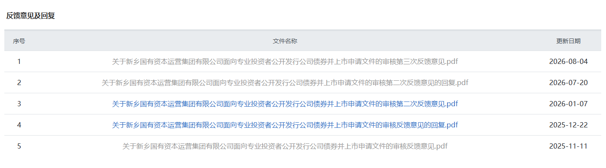
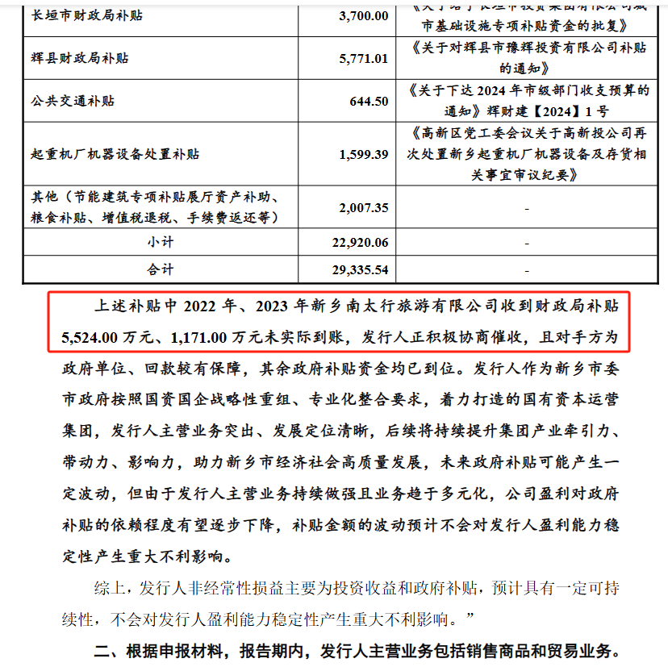
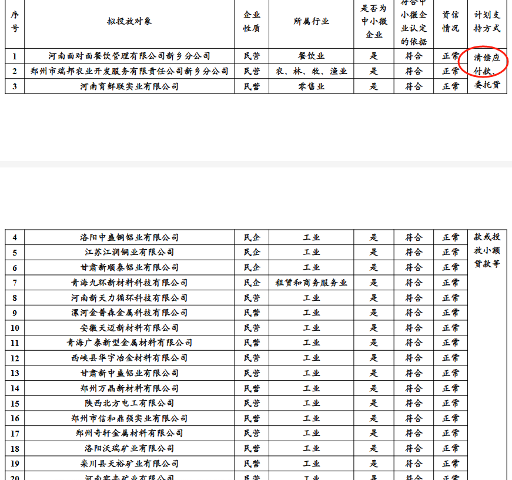
背景与关键数据
- 城投（LGFV，地方政府融资平台）：地方政府设立的国有公司，过去替政府修路、建园区、搞棚改，并以公司名义借钱。钱花在公共项目上，但项目本身大多不赚钱，还款主要靠土地出让收入和财政补贴。
- 公司债审核反馈：城投发公司债要交易所审核。交易所发"反馈意见"（问题清单），发行人写"回复"。问得越多、回得越慢，通常说明问题越难回答。
- 170 亿到期、现金覆盖三成多：账上现金大约 50–60 亿元，剩下 100 多亿必须靠新借款"滚过去"。这就是"借新还旧"：用新债还旧债，债务总量不减，只是往后推。
- "补贴不动了"：截图里的补贴明细合计约 2.93 亿元，其中一家子公司 2022、2023 年应收的财政补贴 5,524 万元和 1,171 万元一直没实际到账。账面上是"政府补贴收入"，现金上是"政府欠钱"。
- 定融：全称"定向融资计划"，通常由城投或其关联方通过地方金融资产交易所、私募渠道卖给个人投资者，收益率比银行理财高，本质是城投的非标债务。这几年监管清理金交所，弱区域的定融延期、分期兑付很常见。Jason 这里说的是"听说"，属于未经证实的信息。
图片解读
- 图 1《反馈意见及回复》：交易所审核记录。2025-11-11 第一次反馈 → 2025-12-22 发行人回复 → 2026-01-07 第二次反馈 → 2026-07-20 才回复第二次反馈（隔了半年多）→ 2026-08-04 第三次反馈。之后项目终止。第二轮回复拖了半年，说明交易所的问题很难回答。
- 图 2（补贴明细与说明）：列出各区县财政局补贴、公共交通补贴、老厂设备处置补贴等，小计约 2.29 亿元、合计约 2.93 亿元（单位万元）。红框说明 2022、2023 年两笔补贴共约 6,700 万元未实际到账，发行人"正积极协商催收"，并称对方是政府单位、回款"较有保障"。
- 图 3（拟投放对象清单）：二十多家河南、甘肃、青海、陕西等地的民营中小微企业（餐饮、农业、零售，以及大量有色金属加工、矿业企业），资信状况都写"正常"。红圈圈出"计划支持方式"一栏：清偿应付款、委托贷款或发放小额贷款等。"清偿应付款"说白了就是还平台自己欠这些企业的货款、工程款。
为什么重要 / 对市场和经济的含义
- 弱城投的融资闸门在收紧：2023 年"一揽子化债"之后，监管对城投发新债管得很严，原则上只允许借新还旧，不许扩张。这单连借新还旧都没批下来，说明交易所对偿债能力有疑问的平台越来越谨慎。
- 拖欠链条传到民营企业：政府欠城投补贴，城投欠供应商货款，供应商再欠员工工资和上游货款。这些都是现金流本来就紧的中小企业。近两年中央一直在推"清欠"（清理拖欠企业账款），这单债把"清偿应付款"写进募资用途，就是在回应这个政策，但项目终止了，钱也就还不上。
- 风险落到个人投资者：定融买家多是当地居民，定融延期会直接冲击当地居民财富和对地方信用的信任。
- 和昨天的帖子连起来看：昨天中证鹏元说城投收到的补贴是其净利润的 2.19 倍（10-28 日报帖 18）。今天这单反映的是另一面：补贴不只是"撑利润"，还可能根本不到账。
延伸知识
- 三角债：上世纪 90 年代初，中国企业之间互相拖欠货款，形成"A 欠 B、B 欠 C、C 又欠 A"的连环债，国务院专门组织过清理。今天的版本是"财政 → 城投 → 民企 → 员工"的拖欠链。类比：你欠房东房租，是因为老板欠你工资，老板又是因为客户没付款。链条上任何一环断掉，整条都会卡住。
- 为什么交易所要"问五轮"：债券发行审核看三件事：钱从哪来还（偿债来源）、钱拿去干什么（募资用途）、出了事谁兜底（增信与股东支持）。反馈次数多、回复时间长，往往意味着三件事里至少有一件讲不清楚。跟踪城投信用时，看审核进度和反馈问题是很实用的"前瞻指标"。
帖 2 · 标普：对比日港美西四场房地产危机，中国新房价格可能还要再跌约两年（美西 10-29 11:39）
标普的判断是：中国新房价格大约 2028 年三季度企稳，一线先于二线、二线先于三线；但成交量还会继续大幅萎缩，三线以下城市到 2028 年仍在跌。读全文收起
帖子原文
（要点转述）标普研究了日本、香港、美国、西班牙四场房地产危机，并和中国 2021 年开始的下行周期对比，认为中国新建住宅均价可能还需要约两年才停止下跌。日本全国住宅用地价格跌了 23 年才止跌，人口结构恶化是重要原因；1997 年后的香港、2007 年后的美国和西班牙则都受益于人口增长。中国大陆同样面临老龄化和人口减少，但新房供应收缩的速度远快于当年的日本。二手住宅价格预计在 2028 年止跌。#房价#
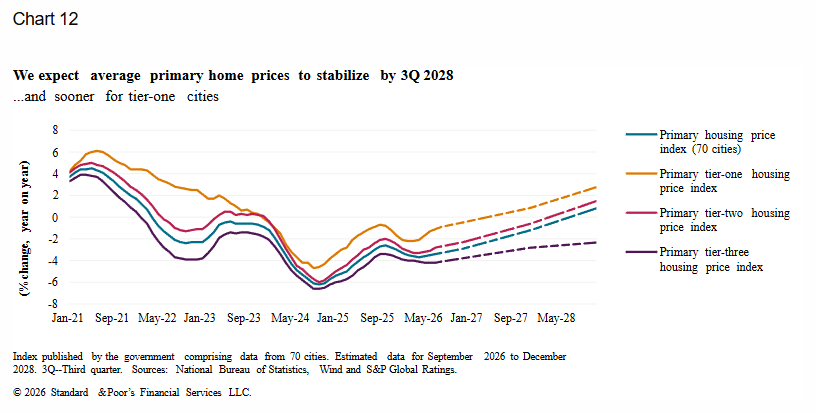
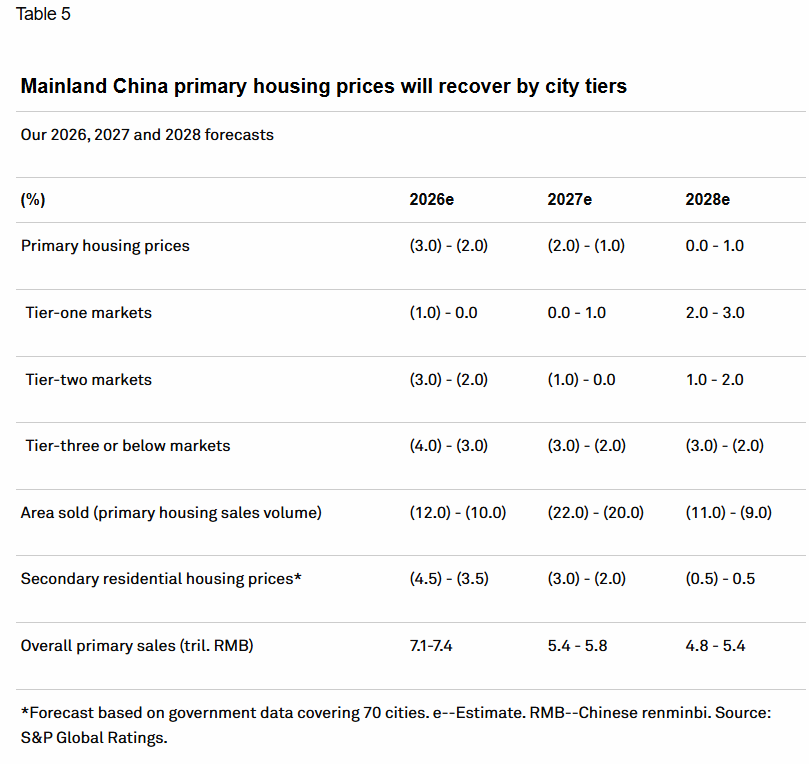
背景与关键数据
- 新房（一手房）与二手房：国家统计局每月公布 70 个大中城市的新建商品住宅和二手住宅价格指数。新房价格受开发商定价和地方"限跌"影响，二手房更接近真实成交。
- 四场危机的参照：日本 1991 年泡沫破裂后地价跌了 20 多年；香港 1997 年后楼价约 6 年跌掉六成多，2003 年见底；美国 2006 年见顶、2012 年见底；西班牙 2008–2014 年跌了三成多。后三者跌得狠但恢复也快，一个重要原因是人口还在增长（移民、新家庭不断进入市场），能消化过剩库存。
- 中国的不同：人口从 2022 年开始减少，老龄化加速，这点像日本；但中国新房供应砍得非常快（开发商不拿地、不开工），供给收缩反而让价格更早止跌。
- 标普的数字：2026 年新房价格跌 2%–3%，2027 年跌 1%–2%，2028 年转为 0%–1% 的小涨；二手房 2026 年跌 3.5%–4.5%，2028 年在 ±0.5% 之间，即止跌。
图片解读
-
图 1（标普图 12《预计新房均价 2028 年三季度企稳》，一线更早）：纵轴是新房价格同比涨跌幅（%），实线是 2021 年 1 月到 2026 年 8 月左右的实际值，虚线是标普预测到 2028 年底。
- 2021 年初四条线都在 +3% 到 +6%（一线最高，约 +6%）。
- 2024 年底到 2025 年初最低：70 城约 -6%，三线约 -6.5%，一线约 -4.5%。
- 2025 年下半年一度收窄，2026 年又小幅走弱：70 城约 -3.5%，一线约 -1%。
- 预测：一线约 2027 年初转正，2028 年底约 +3%；70 城平均约 2028 年中回到 0 附近；三线到 2028 年底仍约 -2.5%。
-
图 2（标普表 5《中国大陆新房价格将按城市层级分化复苏》）：
指标 2026 预测 2027 预测 2028 预测 新房价格 -3% 至 -2% -2% 至 -1% 0% 至 +1% 一线 -1% 至 0% 0% 至 +1% +2% 至 +3% 二线 -3% 至 -2% -1% 至 0% +1% 至 +2% 三线及以下 -4% 至 -3% -3% 至 -2% -3% 至 -2% 新房销售面积 -12% 至 -10% -22% 至 -20% -11% 至 -9% 二手房价格 -4.5% 至 -3.5% -3% 至 -2% -0.5% 至 +0.5% 新房销售额（万亿元） 7.1–7.4 5.4–5.8 4.8–5.4 最值得注意的是销售面积：2027 年还要再跌两成，2028 年再跌一成。价格止跌，靠的是"卖得少"，不是"买的人多了"。
为什么重要 / 对市场和经济的含义
- "价稳量缩"：2021 年全国商品房销售额约 18 万亿元，标普预测 2028 年只有约 5 万亿元，不到高峰的三成。对开发商、建材、家电、家居来说，即使价格不跌了，生意规模也回不去。
- 对地方财政：成交萎缩意味着土地出让收入持续低迷，三四线城市尤其如此。这和帖 1、帖 3 的城投困境是同一个问题的两面。
- 对居民财富和消费：房产占中国家庭资产的大头，价格多跌两年，"财富效应"就继续是负的，居民更不敢花钱（帖 7、帖 14、帖 15）。
- 城市分化：一线有人口流入，先止跌；三线以下人口流出、库存高，可能长期阴跌，这跟日本"东京稳、地方跌"的格局相似。
延伸知识
- 资产负债表衰退（Balance Sheet Recession）：经济学家辜朝明用这个词描述日本 90 年代：房价、股价暴跌后，企业和家庭资产缩水、负债不变，大家的首要目标从"赚最多的钱"变成"赶紧还债"，所以降息也刺激不起借贷和投资。中国居民提前还房贷（帖 7）就有这个味道。
- 人口与房价：买房主力是 25–44 岁人群。这部分人口减少，新增住房需求会结构性下降。可以把房地产市场想成一个水池：人口增长是进水管，新房供应是另一根进水管，拆迁和家庭分户是出水管。日本是进水管关小、库存消化不了；中国现在是把新房这根管子几乎关掉，所以水位（价格）可能更快稳住，但水池里的"流动"（成交量）会小很多。
帖 3 · 标普：只有约三成城投能用经营利润付利息，转型机会只属于少数"强城投"（美西 10-29 11:48）
七成城投连利息都赚不出来；能转型去做 AI、半导体投资的，只是少数背靠富裕地方政府的"强城投"，弱的只能靠政府"续命"。读全文收起
帖子原文
（要点转述）标普：随着市场化转型期限临近，城投平台进入加速变化阶段，但进展有限。截至 2026 年 6 月，只有约 30% 的城投能用经营利润覆盖利息支出，这是衡量财务可持续性最基本的指标。城投如果自己没有投资能力，就只能依赖财力强、资源多的地方政府给它划转资产。从传统基建融资转向投资半导体、AI、新能源汽车，可能让部分平台获得可观收益，但也意味着一些传统城投开始承担更多股权投资风险。#TAX#
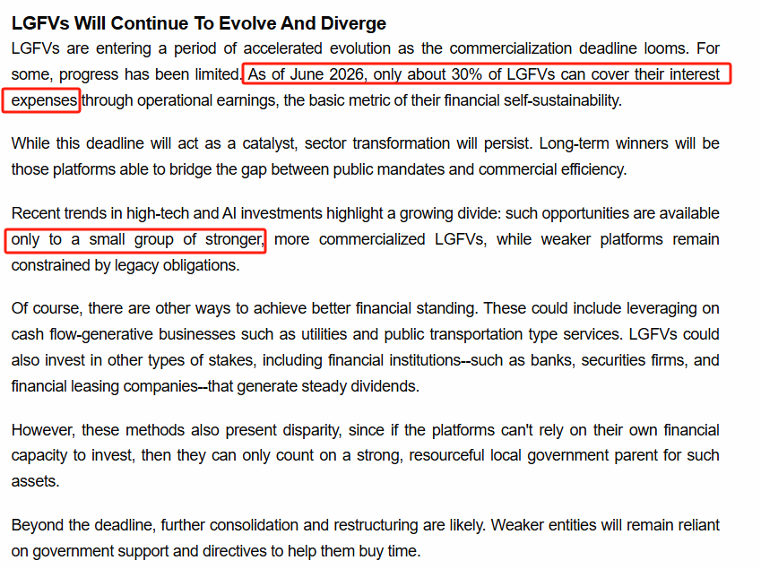
背景与关键数据
- 市场化转型期限：2023 年以来的化债安排要求城投逐步退出"政府融资"职能，变成自负盈亏的普通国企。市场普遍关注的时间点是 2027 年 6 月底前完成融资平台退出。
- "经营利润覆盖利息"：即利息保障倍数（EBIT ÷ 利息支出）大于 1。小于 1 意味着公司本业赚的钱连利息都不够付，更别说还本金，只能靠借新还旧、政府补贴或卖资产。
- 资产划转：政府把有现金流的资产（水务、燃气、公交、停车场、特许经营权）或金融股权（银行、券商、租赁公司股份）注入城投，让它"看起来能赚钱"。前提是地方政府手里真有这些好资产。
- "城投做 VC"：一些地方让城投出资设立产业基金，投半导体、AI、新能源车项目，最有名的是"合肥模式"。
图片解读
- 图 1（标普报告原文段落《城投将继续演变和分化》）：两处红框，一处是"截至 2026 年 6 月只有约 30% 的城投能用经营利润覆盖利息"，另一处是"高科技和 AI 投资机会只属于少数更强、更市场化的城投"。其余段落大意：
- 转型期限是催化剂，但行业转型会持续很久；长期赢家是能兼顾公共任务和商业效率的平台。
- 其他改善办法：做公用事业、公共交通这类有稳定现金流的业务，或持有银行、券商、金融租赁公司股权吃股息。
- 但这些办法同样分化：自己没钱投资的平台，只能指望"强大、资源丰富的地方政府母公司"。
- 期限过后会有更多合并重组；弱平台仍要靠政府支持和指令来"争取时间"。
为什么重要 / 对市场和经济的含义
- 分化是主线：沿海富裕地区的城投会变成"国资投资公司"，内陆、低层级城市的城投可能变成"僵尸平台"。帖 1 那家河南平台就是后一类的样子。
- 信用债定价：投资者买城投债，越来越看"地方政府有没有钱"而不是"有没有政府背景"。强弱区域的利差会拉开。
- 风险换了形态：城投去投 AI、半导体，原来的"基建项目亏钱"变成了"股权投资亏钱"。股权投资波动更大，一旦一批项目同时失败（比如产能过剩导致价格战），损失会集中暴露。这和帖 4 巴克莱担心的"重复投资"是同一件事。
- 持有城投债的地方银行：城投付不出利息，最终压力落在地方中小银行和信托身上。
延伸知识
- 明斯基的三种融资：经济学家海曼·明斯基把借款人分成三类：①对冲性融资，现金流能还本付息；②投机性融资，现金流只够付利息，本金要靠续借；③庞氏融资，连利息都付不起，只能借新债付旧息，必须靠资产升值或外部输血。按标普的数据，约七成城投处在第三类。明斯基认为，经济中庞氏融资占比越高，系统越脆弱。
- 合肥模式为什么难复制：合肥早年用政府资金投京东方、蔚来等，赚了大钱，被称为"最牛风投城市"。成功的前提是：有判断力的团队、敢承担失败的财政底子、押中了产业大周期。大多数城投三样都缺，硬学的结果可能是一堆半导体"烂尾项目"，2020 年前后就出过几起百亿级芯片项目烂尾的案例。
帖 4 · 巴克莱：地方换届可能重启投资，但会从"基建竞赛"变成"产业政策竞赛"（美西 10-29 11:57）
政治周期还在，但"新官上任修路架桥"的老剧本不灵了；新剧本是中央出钱、地方比拼产业政策，代价是可能重复投资、产能外溢到全球。读全文收起
帖子原文
（要点转述）巴克莱：地方领导层换届可能重新刺激投资，但方式和过去不同。地方财政趋紧，投资模式可能从地方政府加杠杆转向中央财政支持，从"基础设施竞赛"转向"产业政策竞赛"，同时带来重复投资和全球溢出风险。2026 年至今中国基建投资同比下降约 6%，而 2023–2025 年平均增长约 5%。除了财政约束和合格项目减少，换届前的不确定性也削弱了地方启动新项目的意愿。新一轮省级领导调整预计从 2026 年底开始、持续到 2027 年上半年。快要离任的官员如果现在上马大项目，债务和执行风险自己扛，成果却要等继任者任内才体现，所以会出现换届前的"观望效应"。巴克莱认为，换届可能增强地方支持增长的意愿，但它们为大规模刺激出资的能力已远弱于过去。过去地方政府除了中央转移支付，主要靠土地出让收入和城投融资两大资金来源，现在两者同时被削弱，更多融资负担要从城投转向社会资本和市场化融资。因此，股市和债市改革也可以看作更大政策努力的一部分：把家庭和机构的储蓄引向实体经济和战略产业。最终可能形成更多元的融资模式，地方政府更多扮演"资金催化者"而不是主要出资者，用有限的财政资源撬动银行、企业和资本市场的资金。#政策分析#
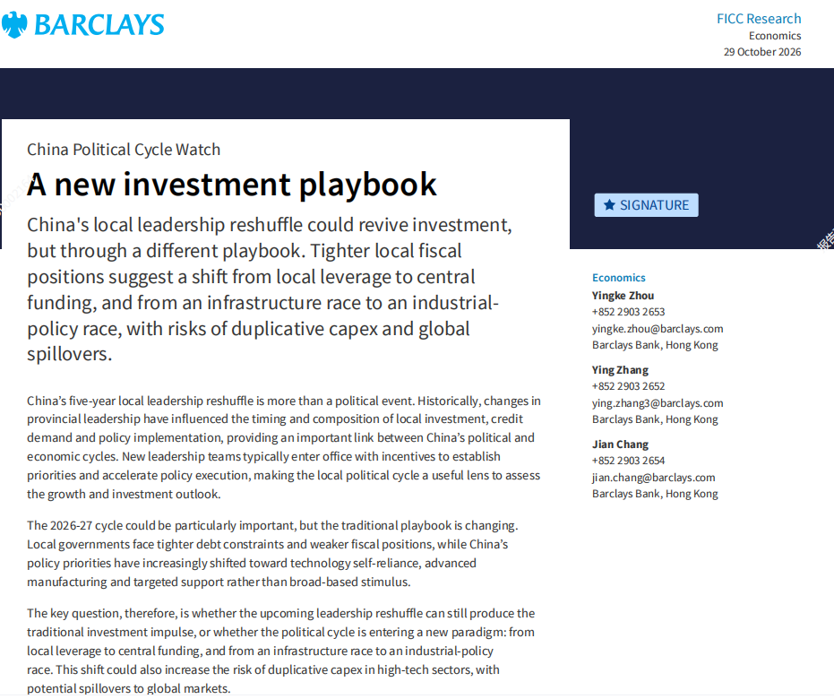
背景与关键数据
- 五年一次的换届：中国党代会五年一次，下一届全国党代会预计在 2027 年秋天召开，之前各省会先完成领导班子调整。巴克莱预计省级调整从 2026 年底持续到 2027 年上半年。
- 政治周期与投资：历史上新领导班子上任初期，往往加快推项目、批信贷，因为要在任期内出成绩。
- 基建投资 -6%：2023–2025 年平均 +5%，2026 年突然转负，降幅很大。
- 两大支柱塌了一半：全国国有土地出让收入从 2021 年约 8.7 万亿元降到 2024 年不到 5 万亿元；城投融资被化债政策锁住（帖 1、帖 3）。
图片解读
- 图 1（巴克莱报告封面，2026-10-29，《中国政治周期观察：新的投资剧本》）：副标题概括了核心观点：地方换届可能重启投资，但剧本不同；地方财政趋紧意味着从"地方加杠杆"转向"中央出资"，从"基建竞赛"转向"产业政策竞赛"，伴随高科技领域重复资本开支和全球溢出的风险。正文要点：
- 省级领导变动历来影响地方投资的时间和结构、信贷需求和政策执行，是连接政治周期与经济周期的纽带。
- 2026–27 这一轮可能尤其重要，但地方债务约束更紧，政策重心已转向科技自立、先进制造和定向支持，而不是全面刺激。
- 核心问题：这次换届还能不能带来传统的投资冲动，还是进入新范式。
为什么重要 / 对市场和经济的含义
- 对大宗商品：基建竞赛利好钢铁、水泥、工程机械；产业竞赛利好半导体设备、电力设备、工业自动化。所以"换届刺激"对螺纹钢和铁矿石的提振可能远不如以前。
- 重复投资与全球溢出：各省都去搞芯片、AI、新能源车，产能可能再次过剩，过剩的产品出口到全球，引发贸易摩擦（帖 15 粤开的"顺差不是越大越好"，以及昨天泰国拟对进口电动车征税）。
- 资本市场被赋予"融资任务"：政策希望居民储蓄通过股市、债市流向战略产业。但帖 17 显示，居民的钱目前主要流向固收理财和债基，股票基金反而缩水。政策意图和居民行为之间有落差。
- "观望效应"的短期含义：换届前（2026 年底到 2027 年上半年），地方投资可能继续偏弱，经济要靠中央财政和出口托底。
延伸知识
- 晋升锦标赛：北大学者周黎安提出的理论：地方官员像参加一场比赛，考核指标（过去主要是 GDP 增速）决定晋升，所以会拼命招商引资、修基建。这解释了中国过去的高投资，也解释了重复建设：每个省都想赢，就都去做同一件热门的事。现在考核指标从 GDP 变成"新质生产力"，比赛项目换了，比赛逻辑没变。
- 政治经济周期：美国经济学家诺德豪斯 1975 年提出，执政者会在选举前刺激经济以争取选票。中国没有选举，但有换届，周期逻辑类似，只是方向相反：巴克莱认为换届前是观望期，换届后才是发力期。
帖 5 · 中指院：9 月全国写字楼挂牌售价同比跌 8.3%，租金同比跌 2.7%（美西 10-29 12:01）
写字楼售价跌得比租金快得多，说明投资者要求的回报率在上升、愿意为写字楼出的价越来越低，商业地产还在下行通道里。读全文收起
帖子原文
（要点转述）中指院：9 月全国办公楼出售挂牌价指数环比跌 0.9%、同比跌 8.32%；出租挂牌价指数环比涨 0.03%、同比跌 2.68%。#经济数据#
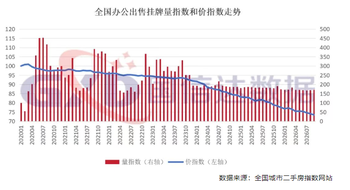
背景与关键数据
- 中指院：中国指数研究院，民间房地产数据机构，定期发布住宅、商办的挂牌价指数和成交数据。
- 挂牌价 ≠ 成交价：挂牌价是业主的报价，真实成交通常更低。挂牌价都在跌，说明卖家已经在主动降价。
- 环比 / 同比：环比是和上个月比，同比是和去年同月比。售价环比 -0.9%，一年下来大约就是 -8% 到 -10%，跟同比 -8.32% 对得上，说明下跌是持续的，不是某个月的偶发。
- 租金跌得慢：租金是企业每月真金白银付的，相对稳定；售价是把未来很多年的租金折成现值，对预期和利率更敏感。
图片解读
- 图 1《全国办公出售挂牌量指数和价指数走势》（2020 年 1 月到 2026 年 9 月左右，月度）：
- 蓝线（价格指数，左轴 70–120）：2020 年初约 100，2021–2022 年在 96–98 缓慢下滑，2023 年 10 月起明显加速下跌，2024 年底约 86，2025 年 10 月约 80，最新约 73。也就是说，相比 2020 年初，全国写字楼挂牌售价累计下跌约 27%。
- 红柱（挂牌量指数，右轴 0–500）：2020–2023 年波动很大（约 100–450），2024 年以来稳定在约 170–200 的较低水平。
- 量没有放大、价却一路跌，说明主要问题是买家太少，而不是抛盘越来越多。
为什么重要 / 对市场和经济的含义
- 写字楼的主要持有者：开发商、城投（很多城投持有大量写字楼、产业园）、险资、地方国企。资产贬值会削弱它们的抵押品价值和再融资能力（与帖 1、帖 3 相关）。
- 需求端的信号：写字楼需求来自企业扩张。租金同比下跌、售价持续下跌，反映企业整体在收缩办公面积，尤其是互联网、金融、教育等过去的"租楼大户"。
- 银行的商业地产贷款：经营贷、抵押贷大量以商铺、写字楼为抵押，抵押物贬值会推高银行坏账风险。
延伸知识
- 资本化率（Cap Rate）：商业地产估值的核心公式是"价格 = 年净租金 ÷ 资本化率"。举例：一层写字楼每年净租金 100 万元，投资者要求 4% 的回报，就值 2,500 万元；如果要求回报升到 4.5%，租金不变也只值约 2,222 万元，跌了 11%。这就是为什么租金只跌 2.7%、售价却跌 8.3%：投资者觉得风险更大，要求更高回报，相当于资本化率上升了。
- 全球写字楼危机：2023–2025 年美国写字楼因远程办公和高利率大跌，部分城市写字楼价格腰斩，拖累了一批地区性银行。中国的原因不同（供给过剩 + 企业收缩），但传导路径相似：资产贬值 → 抵押品缩水 → 金融机构承压。
帖 6 · 摩根大通 × 中原地产：深圳二手房前三季度只跌 0.4%，年底有望整体见底（美西 10-29 12:04）
深圳房价止跌的原因是"供应砍掉了"，而不是"租金回报变得划算了"：53 倍的房价租金比仍然很高。读全文收起
帖子原文
（要点转述）摩根大通与中原地产专家交流的纪要：2026 年前三季度，深圳二手房价格只跌了 0.4%，2024、2025 年全年分别跌 10.4% 和 9.8%，跌幅明显收窄。专家预计到 2026 年底深圳二手住宅价格可能整体触底，主要支撑是新房供应减少、新房价格逐步企稳。深圳住宅平均租金收益率约 1.88%，即不考虑费用和未来变化时，房价约等于 53 年的租金。#房价#
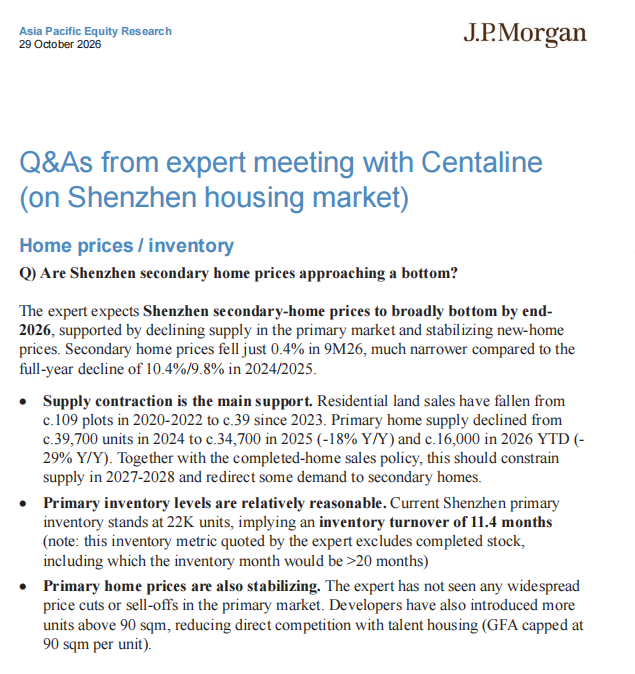
背景与关键数据
- 中原地产：香港和内地老牌地产中介，深圳二手房成交数据的重要来源。
- 跌幅收窄：2024 年 -10.4%、2025 年 -9.8%，2026 年前九个月只有 -0.4%，深圳可能是一线城市里最早止跌的。
- 租金收益率 1.88%：一套 500 万元的房子，一年毛租金约 9.4 万元。扣掉物业费、空置期、维修、税费，净收益更低。作为参照，银行一年定存利率大约 1%（帖 17），房贷利率仍明显高于 1.88%，所以贷款买房出租仍是"倒贴"的。
- 53 倍：1 ÷ 1.88% ≈ 53，类似股票的市盈率：按现在的租金，53 年才能收回房价。
图片解读
- 图 1（摩根大通亚太股票研究，2026-10-29，《与中原地产专家的问答：深圳楼市》）：
- 供应收缩是主要支撑：住宅用地出让从 2020–2022 年的约 109 宗降到 2023 年以来的约 39 宗；新房供应从 2024 年约 39,700 套降到 2025 年约 34,700 套（原文标注 -18%，按这两个数直接算约 -13%，可能口径不同），2026 年至今约 16,000 套（同比 -29%）。加上"现房销售"政策，2027–2028 年供应会进一步受限，部分需求会转向二手房。
- 新房库存相对合理：深圳新房库存约 2.2 万套，去化周期 11.4 个月；但这个口径不含已建成的现房，含现房的话超过 20 个月。
- 新房价格也在企稳：专家没看到大面积降价或抛售；开发商推出更多 90 平方米以上户型，避开和人才房（面积上限 90 平方米）直接竞争。
为什么重要 / 对市场和经济的含义
- 和标普的判断一致：帖 2 标普预计一线城市最先恢复，深圳就是领头羊。一线止跌对全国情绪有示范作用。
- 止跌 ≠ 反弹：53 倍的房价租金比意味着房子作为"收租资产"仍然很贵，房价缺少大涨的基础。见底靠的是供给收缩和自住需求，更像"跌不动了"，而不是"涨起来"。
- 去化周期的口径陷阱：11.4 个月看起来健康，含现房就超过 20 个月。读地产数据时要注意口径，同一个市场换个口径，结论可能完全不同。
延伸知识
- 房价租金比 / 租售比：国际上常用来判断房价是否偏贵。美国大城市房价约为年租金的 15–25 倍，租金收益率约 4%–6%；中国一线城市普遍 50–60 倍，收益率不到 2%。差距来自两点：过去大家买房是赌升值，不是为了收租；国内可投资的资产少，房子承担了"储蓄罐"的功能。
- 期房预售 vs 现房销售：过去中国新房大多是"期房"，房子还没盖好就卖，开发商提前收钱再去拿地，这是高杠杆扩张的发动机，也是"烂尾楼"的根源。"现房销售"要求盖好再卖，开发商需要更多自有资金，扩张速度会慢很多，供应自然减少。这对房价是支撑，对开发商是压力。
帖 7 · 华创：居民"边际谨慎"的三个证据：贷款在缩、收入跟不上、存款变定期（美西 10-29 12:07）
名义 GDP 在回升，但居民的贷款在减、工资只涨了一半、钱越来越往定期存款里放，宏观"变热"并没有传导到老百姓身上。读全文收起
帖子原文
（要点转述）华创：今年二季度以来，随着资本市场波动加大、金融领先指标开始波动，居民部门出现新一轮"边际谨慎"，看三组数据：一是信贷层面，居民部门已在缩表：消费贷、按揭贷、经营贷的 12 个月滚动年化增量持续下行，二季度以来居民贷款对社融的拉动已经转负。二是收入增速和名义 GDP 增速的裂口在扩大：2025 年名义 GDP 增长约 4%，外出农民工和 A 股上市公司人均收入增速约 2%；2026 年名义 GDP 增速预计向 6% 左右靠拢，但从半年报和近几个月数据看，两者人均薪酬增速都在 3% 左右，两年都只有名义 GDP 增速的一半。三是风险偏好指标开始回落：一方面居民又开始偏好定期存款，过去 12 个月新增存款里居民存款的占比从 5 月起连续四个月上升；另一方面居民又开始减少消费，9 月居民消费倾向处于 2019 年以来同期低位，只高于 2020 年。#经济数据#
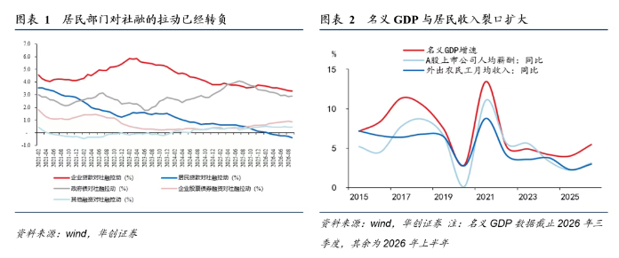
背景与关键数据
- 社融（社会融资规模）：实体经济从金融体系拿到的全部资金，包括人民币贷款、企业债券、股票融资、政府债券等。"对社融的拉动"是指各分项对社融存量增速的贡献（单位：百分点）。
- 居民缩表：居民新增贷款少于还款，贷款余额不增反减。最典型的是提前还房贷：存款利率低、房价不涨，与其理财不如还贷。
- 名义 GDP vs 实际 GDP：名义 GDP 包含价格变化。2026 年名义 GDP 从约 4% 升到约 6%，主要是价格回升（PPI 转正、油价上涨），不是因为产量多了。
- 收入裂口：名义 GDP 是整个经济"做大的蛋糕"，居民工资只涨了一半，说明多出来的部分主要流向了企业利润（尤其是上游资源行业）和政府税收。
- 居民消费倾向：人均消费支出 ÷ 人均可支配收入，国家统计局按季度公布。数值越低，说明同样的收入花出去的越少。
图片解读
- 图 1《居民部门对社融的拉动已经转负》（2021 年 2 月到 2026 年 8 月，单位：百分点）：
- 红线（企业贷款）：2021 年约 4.5，2022 年升到约 5.8 的高点，之后一路回落到约 3.3。
- 灰线（政府债）：约 2.5–3，2025 年一度升到约 4，近期约 3。政府在加杠杆。
- 深蓝线（居民贷款）：2021 年初约 3.5，持续下滑，2026 年中跌破 0，8 月约 -0.3。
- 粉线（企业债券和股票融资）：从约 1.8 降到约 0.8；浅蓝线（其他）在 0 附近。
- 图 2《名义 GDP 与居民收入裂口扩大》（2015–2026 年，同比，%）：
- 红线（名义 GDP）：2017 年约 11.5%，2020 年约 3%，2021 年约 13.5%，2022–2025 年在 4%–5% 之间，2026 年回升到约 5.5%。
- 浅蓝线（A 股上市公司人均薪酬）：2021 年约 11%，之后降到 2025 年约 2%，2026 年上半年约 3%。
- 深蓝线（外出农民工月均收入）：2015–2019 年约 6.5%–7%，2021 年约 8.8%，2025 年约 2.3%，2026 年上半年约 3%。
- 2015–2019 年三条线大体同步；2024 年以后红线明显高于两条蓝线，裂口张开。
为什么重要 / 对市场和经济的含义
- "数据好、体感差"的中国版：昨天日报讲美国消费者信心创低（10-28 日报帖 27），中国这边是另一种形式：名义 GDP 回升主要来自价格，居民收入没跟上，生活成本却在涨。
- 消费难起来：居民减贷、增存、少花，内需就弱，经济更依赖出口和政府投资（帖 15 粤开、帖 4 巴克莱）。
- 对股市：居民风险偏好回落，意味着"存款搬家进股市"的逻辑不成立（帖 17 印证：钱去了固收理财，股票基金在缩水）。
- 对政策：光靠货币宽松很难解决问题，因为居民不想借钱。需要的是收入分配、社保等结构性改革，帖 15 的结论也指向这里。
延伸知识
- 预防性储蓄：当人们对未来收入、就业、养老、医疗不确定时，会多存钱留后路，即使利率很低也照存。这是中国储蓄率高的重要原因之一。类比：天气预报说下周可能下暴雨，你会提前囤水囤粮，哪怕现在阳光明媚。
- 流动性陷阱：凯恩斯提出的概念：利率已经很低，央行再降息也刺激不了借贷和消费，因为大家宁愿持有现金或存款。居民贷款对社融拉动转负、定存占比上升，就是这种状态的典型表现。
帖 8 · 评论员 Korybko：俄乌、美俄、欧洲内部正在"勾兑"一笔多边交易（美西 10-29 12:23）
这是一位评论员设想的"欧洲战后安全大交易"：美国退到幕后、集中精力对付中国，俄罗斯换来北约不再东扩和能源出口恢复，欧洲自己承担防务。读全文收起
帖子原文
（要点转述）Andrew Korybko：俄乌、美俄、欧洲内部都在讨价还价，目的是重新平衡各方利益，然后把重心调整到各自更关心的地区。（Jason 附了文章截图和一张中文整理表。）
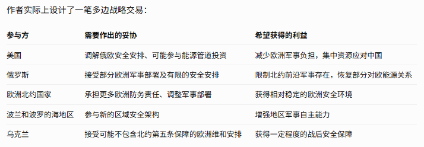
背景与关键数据
- Andrew Korybko：常驻莫斯科的美国籍政治评论员，文章多从俄罗斯视角出发。他的文章是观点和设想，不是谈判消息，阅读时要注意立场。
- 北约第五条：集体防御条款，"攻击一个成员国等于攻击全体"。文章设想美国书面承诺不把第五条保障延伸到维和部队。
- 1997 年《北约—俄罗斯基本文件》：北约当年承诺不在新成员国领土上"永久驻扎大量作战部队"。文中的"1997 年后加入的成员"指波兰、波罗的海三国等冷战后加入北约的国家。
- Intermarium（海间联邦）：波兰两次大战之间提出的设想，在德国和俄罗斯之间建立一条由中东欧国家组成的联盟带。文中用来指从波罗的海到黑海的这一圈国家。
- 三条管道：北溪（俄—德海底管道，2022 年被炸）、亚马尔—欧洲管道（经白俄罗斯、波兰）、兄弟管道（经乌克兰，2025 年初过境协议到期后停运）。2022 年前，俄罗斯管道气约占欧盟天然气进口的四成。
图片解读
- 图 1（Korybko 文章截图，英文）：要点概括：
- 俄罗斯出兵的大目标是重塑欧洲安全架构，但未能用武力实现最大化目标。
- 美国在推"北约 3.0"：让欧洲北约自己遏制俄罗斯，美军大部分从欧洲撤回本土、拉美和亚太。
- 德俄之间的"海间带"国家将扮演关键角色，军事安全重心转向波罗的海，由瑞典领衔的"维京集团"和波兰分别负责北部和东部；美国和英法德"幕后领导"。
- 为换取俄罗斯同意英法德向乌克兰派维和部队，美国要书面承诺不对维和部队适用第五条，北约老成员要从 1997 年后加入的国家撤军（波兰的美军永久基地或许例外）；英法也要书面承诺不把核保护伞延伸到这些国家。
- 美国可能入股北溪、亚马尔、兄弟管道，让俄罗斯在美国监督下恢复对欧能源出口，"大家都在和平里有股份"。
- 最终：美国更自由地"转向亚洲"遏制中国，俄罗斯关注中亚，欧盟重建被制裁拖累的经济。
- 图 2（中文整理表《作者实际上设计了一笔多边战略交易》）：
参与方 需要作出的妥协 希望获得的利益 美国 调解俄欧安全安排，可能参与能源管道投资 减少欧洲军事负担，集中资源应对中国 俄罗斯 接受部分欧洲军事部署及有限安全安排 限制北约前沿军事存在，恢复部分对欧能源关系 欧洲北约国家 承担更多欧洲防务责任，调整军事部署 获得相对稳定的欧洲安全环境 波兰和波罗的海地区 参与新的区域安全架构 增强地区军事自主能力 乌克兰 接受可能不含北约第五条保障的欧洲维和安排 获得一定程度的战后安全保障
为什么重要 / 对市场和经济的含义
- 对能源：如果俄罗斯管道气重回欧洲，欧洲天然气价格（TTF）会大幅下降，利好欧洲化工、制造业，利空美国 LNG 出口商的定价。但这需要多方政治妥协，可能性有多大要打个问号。
- 对国防：无论哪种方案，欧洲都要承担更多防务，欧洲军工股和国防开支的长期上升趋势不变。
- 对中国：文章的核心逻辑是美国从欧洲脱身、集中力量"转向亚洲"。如果成真，中美竞争会更聚焦，对中国的外部压力不会减轻。
- 对乌克兰：方案里乌克兰得到的是"打折版"安全保障，这是最大的不确定性所在，乌克兰和波兰等国能否接受很难说。
延伸知识
- 势力范围与缓冲区：大国常希望自己周边有一圈"缓冲国"，既不属于对方阵营，也不构成威胁。冷战时的芬兰就是例子（"芬兰化"）。俄罗斯反对北约东扩，本质上是不愿失去缓冲区；这篇文章设想的是用"有限驻军 + 书面承诺"重建一种软性缓冲。
- 能源与地缘的"相互依赖"：经济学里有一种观点认为，贸易和能源依赖能降低战争风险，因为打仗代价太高。但 2022 年俄乌冲突说明，依赖也可能变成武器（断气、制裁）。文章说"让美国入股管道"，就是想用利益捆绑来稳定和平，这个思路本身也有历史争议。
帖 9 · 彭博：大众在华合资公司前九个月营业亏损 1.13 亿欧元，丰田 9 月在华销量跌两成（美西 10-29 12:27）
外资车企在中国从"摇钱树"变成"亏损户"：大众在华合资利润十年从近 50 亿欧元跌到亏损，日系三家在华销量大跌，只能靠美国和日本本土的混动车撑着。读全文收起
帖子原文
（要点转述）彭博：德国大众在中国的合资企业前九个月营业亏损 1.13 亿欧元；丰田和雷克萨斯品牌在华销量 9 月下降 20%。#其他国家经济#
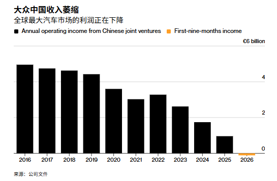
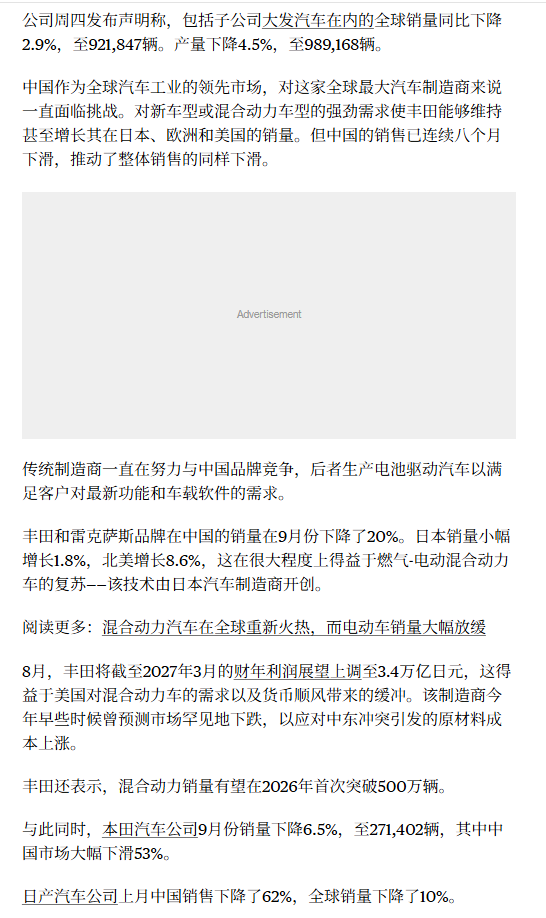
背景与关键数据
- 合资模式：过去外资车企要在中国造车，必须和中国车企合资且股比不超过 50%（这一限制 2022 年全面取消）。大众和上汽、一汽合资，曾是中国最大的乘用车阵营，中国一度贡献大众集团三四成利润。
- 为什么亏：中国品牌电动车（比亚迪、吉利、"新势力"等）在技术、智能化和价格上全面竞争，燃油车市场萎缩，叠加价格战，合资品牌份额和利润同时下滑。
- 日系的处境：丰田、本田、日产在中国大幅下滑，但在美国和日本本土靠混合动力车卖得很好。
图片解读
- 图 1《大众中国收入萎缩：全球最大汽车市场的利润正在下降》（大众来自中国合资企业的年度营业利润，十亿欧元）：2016 年约 4.9，2017 年约 4.7，2018 年约 4.6，2019 年约 4.4，2020 年约 3.6，2021 年约 3.0，2022 年约 3.3，2023 年约 2.6，2024 年约 1.7，2025 年约 0.9；2026 年前九个月（橙色）略低于 0，即亏损 1.13 亿欧元。十年间几乎是直线下跌。
- 图 2（彭博中文报道截图，丰田等日系车企 9 月销量）：
- 丰田（含大发）9 月全球销量同比 -2.9% 至约 92.2 万辆，产量 -4.5% 至约 98.9 万辆。
- 中国销量已连续八个月下滑，丰田和雷克萨斯 9 月在华销量 -20%；日本本土 +1.8%，北美 +8.6%，主要靠油电混动车复苏。
- 丰田 8 月把截至 2027 年 3 月的财年利润预期上调至 3.4 万亿日元，原因是美国混动需求强和汇率顺风；年初曾因中东冲突推高原材料成本而预计利润罕见下滑。
- 丰田预计 2026 年混动销量首次突破 500 万辆。
- 本田 9 月销量 -6.5%，其中中国 -53%；日产 9 月中国销量 -62%，全球 -10%。
为什么重要 / 对市场和经济的含义
- 中国汽车业的"内卷"：外资亏损，中国品牌赢了份额但也在打价格战。昨天崔东树说汽车行业销售利润率只有 1.4%（10-28 日报帖 1），整个行业都在"卖得多、赚得少"。
- 就业与地方经济：合资工厂所在地（长春、上海、广州、天津等）的配套企业和就业会受冲击，部分合资工厂已经在减产、转产或关闭。
- 产能外溢：国内卖不动，就出口。中国汽车出口快速增长，引发泰国（昨天帖 29）、欧盟、墨西哥等加税或设限。
- 对日本车企股票：中国业务已经不是估值关键，美国市场和混动战略才是。
延伸知识
- "创造性破坏"：经济学家熊彼特的说法：新技术和新企业会摧毁旧的产业格局。中国电动车对合资燃油车的冲击就是一例，消费者得到了更便宜、更好的车，但旧企业的员工和股东要承担代价。
- 混合动力为什么在美国翻红：纯电车需要充电网络，美国地广人稀、充电桩少，补贴政策又在变；混动不用充电、比燃油车省油，在油价上涨时（今年中东冲突推高了油价）就更受欢迎。技术路线的胜负不只取决于技术，还取决于基础设施和政策。
帖 10 · 彭博：2026 年全球债券发行已破纪录，AI 公司贡献了约三分之一的增量（美西 10-29 12:30）
AI 公司已经从"用自己的现金搞投资"变成"大规模借钱搞投资"，和各国政府一起抢资金，把全球利率往上推。读全文收起
帖子原文
（要点转述）彭博：今年以来，金融机构、企业和政府通过银团承销发行的投资级债和高收益（垃圾）债合计约 6.61 万亿美元，比去年同期多 15%，还剩两个月就已经超过 2025 年创下的全年纪录。云计算巨头和数据中心开发商贡献了今年全球债券发行增量的约三分之一，超过其他所有非金融行业之和，新增融资规模是政府部门的两倍。全球债券收益率上升、各国政府又要借钱填补赤字，AI 融资需求加剧了全球资本竞争。#金融#
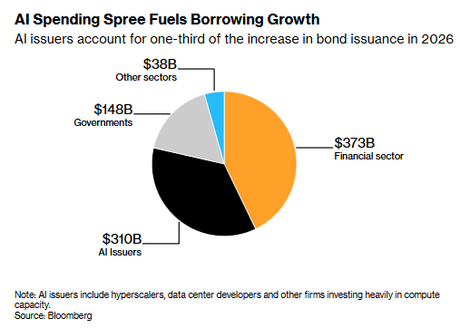
背景与关键数据
- 投资级 vs 高收益债：评级 BBB- 及以上是投资级（违约风险低、利率低）；以下是高收益债，俗称垃圾债，利率高、风险大。
- 银团承销：由多家投行组成承销团，把债券卖给大量机构投资者，是大额发行的主要方式。
- AI 发行人：包括超大规模云厂商（微软、亚马逊、谷歌、Meta、甲骨文等）、数据中心开发商，以及其他大举投资算力的公司。
- 6.61 万亿美元 +15%：去年同期约 5.75 万亿美元，增量约 0.86 万亿美元。
图片解读
- 图 1《AI 支出狂潮推动借贷增长：AI 发行人贡献 2026 年债券发行增量的三分之一》（饼图，按行业划分的发行增量）：
- 金融部门：3,730 亿美元（约 43%）
- AI 发行人：3,100 亿美元（约 36%）
- 政府：1,480 亿美元（约 17%）
- 其他行业：380 亿美元（约 4%）
- 合计约 8,690 亿美元，跟上面算的增量对得上。AI 的增量是政府的约 2.1 倍，是其他所有非金融行业的 8 倍多。
为什么重要 / 对市场和经济的含义
- AI 投资的资金来源变了：前两年科技巨头主要靠经营现金流投资，现在越来越依赖举债。借钱投资意味着 AI 投资回报不及预期时，风险会从股东蔓延到债权人。帖 11 国金提到的"CRWV 信用风险发酵"就是这种担忧的苗头。
- 利率压力：AI 公司和政府同时大量发债，债券供给大增，投资者要求更高利率才肯买。昨天花旗也说 AI 资本开支加上政府发债在推高长端利率（10-28 日报帖 3）。
- 对美国 GDP：借来的钱变成数据中心和芯片投资，直接推高了 GDP 里的"投资"项（帖 12 美国三季度投资贡献了 3.2 个百分点）。
- 对其他借款人：中小企业、新兴市场国家借钱会更难、更贵，这就是"挤出效应"。
延伸知识
- 挤出效应：资金是有限的。一个大借款人借走了很多钱，利率被推高，其他人就借得少或借得贵。类比：一家大公司在小镇上高薪招人，小餐馆就很难雇到服务员。传统上说的是政府赤字挤出私人投资，现在 AI 巨头也成了"挤出者"。
- 2000 年电信泡沫的教训：90 年代末电信公司大举借债铺设光纤网络，相信互联网流量会无限增长。流量确实增长了，但铺设量远超需求，光纤价格暴跌，世通、环球电讯等公司破产。技术本身是真的，但"借钱抢建"可能让投资回报远低于预期。这是今天市场讨论 AI 债务时最常引用的历史类比。
帖 11 · 国金：黄金下跌更像"流动性抛售"，波动率回落但还不能确认见底（美西 10-29 12:38）
近期美股下跌时黄金没有被当作避险资产买入，反而被卖：杠杆资金要补保证金，黄金流动性好、赚得多，于是先被卖掉。读全文收起
帖子原文
（要点转述）国金：黄金下跌的原因可能是流动性紧张引发的抛售。黄金 3 个月隐含波动率已回落到约 24%，处在近一年 64% 分位，说明波动预期有所降温，但还不足以确认价格见底。#金融#
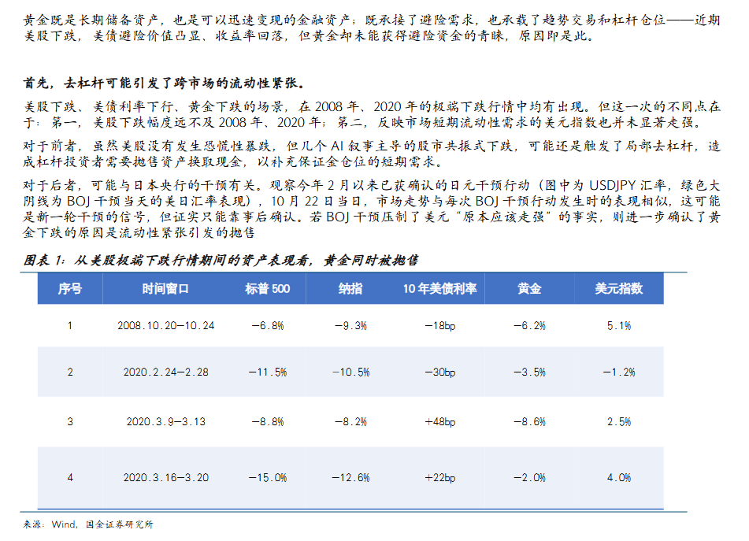
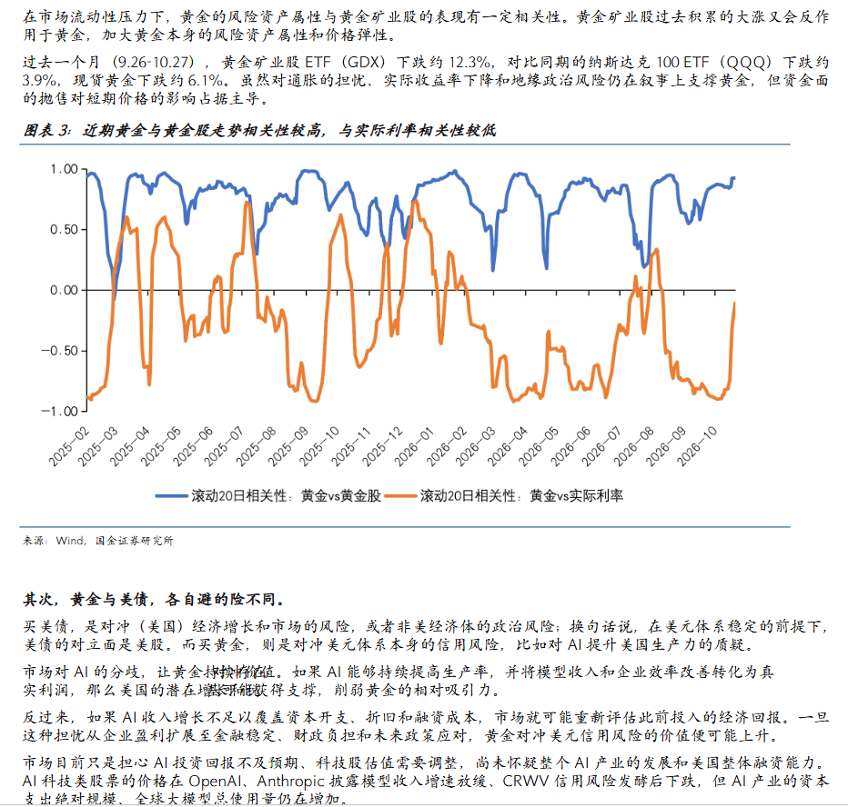
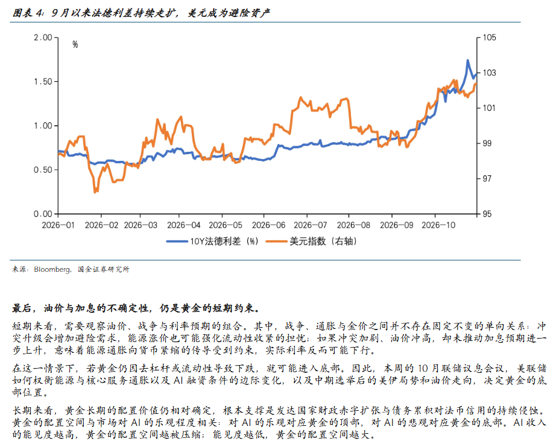
背景与关键数据
- 隐含波动率：从期权价格反推出的市场对未来波动的预期。24% 的意思是市场预期黄金未来一年波动幅度约 ±24%（一个标准差）。黄金长期隐含波动率一般在 15% 左右，24% 仍然偏高。
- 64% 分位：在过去一年的数值里，比当前低的占 64%。即"比一年中大部分时候还高一点，但不算极端"。
- 流动性抛售：投资者在别处亏了钱、要补保证金时，会卖掉最容易卖、最赚钱的资产。黄金今年大涨、流动性极好，就成了"提款机"。
- 日本央行干预：日元贬值过快时，日本央行会卖美元、买日元，这会压低美元指数。报告推测 10 月 22 日可能有一次未公布的干预。
- GDX：黄金矿业股 ETF。金矿股相当于"加了杠杆的黄金"：金价涨 10%，矿企利润可能涨 20%–30%，反之亦然。
图片解读
- 图 1（国金报告：黄金为什么没获得避险资金；图表 1）：
- 黄金既是长期储备资产，也是能快速变现的金融资产，既承接避险需求，也承载趋势交易和杠杆仓位。近期美股下跌、美债收益率回落，黄金却没有获得避险资金青睐。
- 原因一：去杠杆可能引发跨市场流动性紧张。美股跌、美债利率降、黄金跌，这个组合在 2008 年和 2020 年的极端下跌中都出现过。这次的不同：①美股跌幅远小于 2008、2020 年；②美元指数没有明显走强。前者是因为几个 AI 主导的股票集体下跌触发局部去杠杆；后者可能和日本央行干预有关。
- 图表 1《美股极端下跌期间黄金同时被抛售》：
时间窗口 标普 500 纳指 10 年美债利率 黄金 美元指数 2008.10.20–10.24 -6.8% -9.3% -18bp -6.2% +5.1% 2020.2.24–2.28 -11.5% -10.5% -30bp -3.5% -1.2% 2020.3.9–3.13 -8.8% -8.2% +48bp -8.6% +2.5% 2020.3.16–3.20 -15.0% -12.6% +22bp -2.0% +4.0%
- 图 2（图表 3《近期黄金与黄金股走势相关性较高，与实际利率相关性较低》）：
- 过去一个月（9.26–10.27）GDX 跌 12.3%，QQQ 跌 3.9%，现货黄金跌 6.1%。金矿股跌得比纳指还多，说明黄金正在被当作"风险资产"交易。
- 蓝线（黄金 vs 金矿股，20 日滚动相关系数）：大部分时间在 0.6–0.95，最新约 0.92，高度同步。
- 橙线（黄金 vs 实际利率）：大部分时间在 -0.5 到 -0.9（传统负相关），最新从约 -0.8 快速回升到约 -0.1，说明实际利率已经解释不了近期金价。
- 原因二：黄金和美债避的险不同。美债对冲的是美国经济增长和市场风险（前提是美元体系稳定）；黄金对冲的是美元体系本身的信用风险。如果 AI 能持续提高生产率、转化为真实利润，美元信用就有支撑，黄金吸引力下降；反之，如果 AI 收入不足以覆盖资本开支、折旧和融资成本，并且这种担忧扩散到企业盈利、金融稳定和财政，黄金价值就会上升。目前市场只是担心 AI 回报不及预期、科技股估值需要调整（OpenAI、Anthropic 披露模型收入增速放缓、CRWV 信用风险发酵后 AI 股下跌），还没怀疑整个 AI 产业和美国融资能力。
- 图 3（图表 4《9 月以来法德利差持续走扩，美元成为避险资产》，2026 年 1–10 月）：
- 蓝线（10 年期法国—德国国债利差，左轴 %）：上半年在 0.6–0.8 之间，9 月起快速走扩，10 月中旬一度约 1.75，最新约 1.6。法国国债相对德国国债的风险溢价大幅上升，说明欧洲（尤其法国）的财政或政治风险在加剧。
- 橙线（美元指数，右轴）：2 月低点约 96.5，9 月约 99，10 月升到约 102.5。欧洲出问题时，资金流向美元。
- 原因三：油价与加息的不确定性仍是黄金的短期约束。冲突升级会增加避险需求，但能源涨价也可能加重流动性紧缩的担忧。如果冲突加剧、油价冲高，却没有推动加息预期进一步上升，实际利率反而可能下行。这时如果黄金还因去杠杆下跌，就可能接近底部。10 月议息会议上美联储如何权衡能源和核心服务通胀、AI 融资条件，以及中期选举后的美伊局势和油价，会决定黄金的底部位置。长期看，发达国家财政赤字扩张、债务累积对法币信用的侵蚀，是黄金的根本支撑。对 AI 的乐观对应黄金的顶部，对 AI 的悲观对应黄金的底部。
为什么重要 / 对市场和经济的含义
- "避险资产"不是永远避险：危机的第一阶段，什么都卖，黄金也不例外；等流动性压力过去，黄金往往率先反弹。2008 年 10 月和 2020 年 3 月黄金都先跌，随后几个月大涨。
- 黄金和 AI 的跷跷板：国金的框架很有意思：AI 成功 → 美国生产率提升 → 美元信用稳 → 黄金不那么被需要；AI 失败 → 债务和财政问题暴露 → 美元信用受质疑 → 黄金价值上升。所以 AI 叙事的变化，也会影响金价。
- 美联储的角色：帖 18 显示市场押注 12 月加息约 75%。加息推高实际利率，压制黄金；但如果油价冲高、美联储却不加息，实际利率下降，黄金反而受益。
延伸知识
- 保证金追缴（Margin Call）：用 100 万本金借 400 万买股票，总仓位 500 万。股票跌 10% 就亏 50 万，本金只剩 50 万，券商要求你补钱或减仓。你手里还有一些黄金，赚了不少、随时能卖，就会先卖黄金去补保证金。很多人同时这么做，金价就会和股价一起跌。这就是"流动性抛售"。
- 黄金与实际利率的"老规律"失效：实际利率 = 名义利率 - 通胀预期。传统上实际利率越高，持有不生息的黄金机会成本越大，金价越低，两者负相关。但 2022 年以后各国央行（尤其新兴市场）大量买金，金价和实际利率同时上涨，这条老规律被打破。国金图 3 里橙线大部分时间仍为负，说明这条规律并非完全失效，只是不再是唯一决定因素。
帖 12 · BEA：美国三季度实际 GDP 折年增长 3.4%，前三季度名义 GDP 同比约 6%（美西 10-29 12:44）
美国三季度经济很强，主要靠投资（AI）拉动；名义增速约 6%，连续第五年高于中国。读全文收起
帖子原文
（要点转述）美国经济分析局（BEA）：美国 2026 年前三季度累计名义 GDP 同比增长约 5.98%。（Jason 附了 BEA 的三季度增长贡献图和他自制的中美名义 GDP 增速对比图。）#其他国家经济#
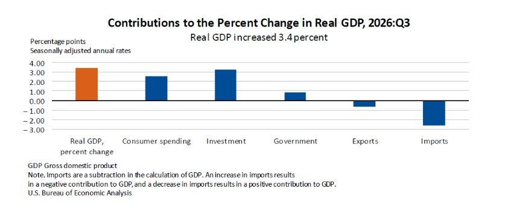
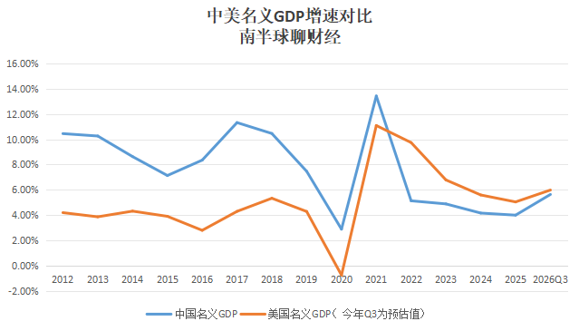
背景与关键数据
- BEA：美国商务部经济分析局，负责发布 GDP 数据。这次是三季度"初值"，之后还会修正两次。
- 折年率（SAAR）：美国 GDP 习惯用"季度环比 × 4"（更准确是复利折算）来表示。3.4% 意味着如果全年都按三季度这个速度增长，一年能增长 3.4%。中国习惯用"同比"，两者不能直接比较。
- 名义 vs 实际：实际 GDP 剔除了价格变化，衡量产出数量；名义 GDP 含价格。名义 GDP 对税收、企业营收、债务负担更重要，因为税、营收和债务都是按名义金额算的。
- 前三季度名义同比约 6%：大约是实际增长 2.5% 左右加上通胀 3.5% 左右。
图片解读
- 图 1（BEA《2026 年三季度实际 GDP 变动的贡献》，百分点，季调折年率）：
- 实际 GDP（橙柱）：+3.4%
- 个人消费：约 +2.5 个百分点
- 投资：约 +3.2 个百分点（比消费还多）
- 政府：约 +0.8 个百分点
- 出口：约 -0.5 个百分点
- 进口：约 -2.6 个百分点
- 合计约 3.4，对得上。投资贡献这么大、进口拖累也这么大，典型特征就是 AI：大量购买服务器、芯片（很多是进口的），投资项加上去，进口项再减回来一部分。
- 图 2（Jason 自制《中美名义 GDP 增速对比》，2012 年至 2026 年三季度）：
- 蓝线（中国）：2012–2013 年约 10.5%，2015 年约 7%，2017 年约 11.3%，2020 年约 2.9%，2021 年约 13.4%，2022–2025 年在 4%–5% 之间（2025 年约 4%），2026 年三季度约 5.6%。
- 橙线（美国，2026 年三季度为估计值）：2012–2019 年在 3%–5% 之间，2020 年约 -0.8%，2021 年约 11%，2022 年约 9.8%，之后逐步回落到 2025 年约 5%，2026 年三季度约 6%。
- 两条线在 2021 年后交叉：2012–2021 年中国名义增速一直高于美国，2022 年起美国反超，已经连续五年。
为什么重要 / 对市场和经济的含义
- 美联储为什么想加息：经济增长 3.4%、名义增速 6%，再加上油价推高通胀，美联储没有理由放松，市场押注 12 月加息（帖 18）。
- AI 是美国经济的"发动机"：投资贡献超过消费，说明增长高度依赖 AI 资本开支。如果 AI 投资降速（帖 10 的融资压力、帖 11 的 AI 怀疑），增长会明显放慢。
- 中美名义增速的逆转：名义 GDP 决定了以美元计的经济体量变化。中国名义增速低于美国，加上人民币汇率变化，中国 GDP 相对美国的比例从 2021 年约 75% 的高点回落到近年约三分之二。名义增速也影响债务可持续性：中国 2023–2025 年名义增速低于实际增速（通缩），债务负担相对加重。
- 中国 2026 年名义增速回升到 5.6%：主要是价格回升，结合帖 7 看，这份"名义繁荣"没有同步传到居民收入上。
延伸知识
- 支出法 GDP：C + I + G + (X − M)：消费 + 投资 + 政府支出 + 出口 - 进口。进口要减掉，是因为 C、I、G 里已经包含了买进口商品的钱，而进口商品不是本国生产的，要扣回来。所以"进口拖累 GDP"只是会计处理，不代表进口本身是坏事。
- r 和 g：判断债务能否持续，看名义利率 r 和名义增速 g。如果 g > r，债务占 GDP 的比例会自然下降，就像收入涨得比房贷利息快，房贷负担会越来越轻；如果 r > g，就要靠财政盈余才能稳住。美国现在名义增速约 6%，高于国债利率，是它还能承受大额赤字的原因之一；中国前几年名义增速低，地方债的压力因此更大。
帖 13 · 日经：中国乳业供过于求，明治退出中国乳制品业务（美西 10-29 12:49）
政策鼓励多养牛、多产奶，但喝奶的人没变多，奶价连跌，外资退出、本土企业转去做老年奶粉，是"供强需弱"的一个缩影。读全文收起
帖子原文
（要点转述）日经：中国乳制品市场持续低迷。政府支持下乳制品产量不断扩大，消费量却长期触顶。日本明治控股将退出中国乳制品业务，本土大型乳企也被迫调整战略，比如转向面向中老年人的奶粉。供应过剩的背景之一是快速推进的少子化。#经济数据#
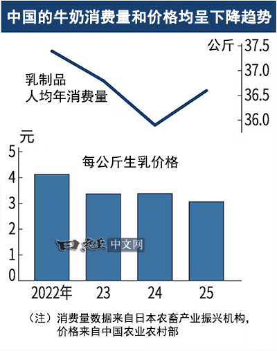
背景与关键数据
- 奶业振兴政策：2018 年前后，国家出台奶业振兴意见，鼓励建大型牧场、提高国产奶自给率，规模牧场快速扩张。
- 奶牛周期：一头小母牛从出生到产奶要两年多，牧场扩张的决策要提前好几年做。2020–2021 年奶价高、牧场大举扩产，等这些牛开始产奶时，需求已经转弱，于是奶价下跌，出现"倒奶杀牛"的新闻。
- 人均消费量：图中约 36 公斤/年，相当于每天约 100 克。《中国居民膳食指南（2022）》建议每天摄入 300–500 克奶及奶制品，实际只有建议量的三分之一左右。说明不是"喝饱了"，而是"消费能力和习惯不足"。
- 少子化：婴幼儿奶粉是乳企最赚钱的业务之一。中国出生人口从 2016 年约 1,800 万降到 2024 年约 950 万，婴配粉市场随之萎缩。
图片解读
- 图 1《中国的牛奶消费量和价格均呈下降趋势》（2022–2025 年）：
- 折线（乳制品人均年消费量，右轴，公斤）：2022 年约 37.4，2023 年约 36.8，2024 年约 35.9，2025 年回升到约 36.6。四年整体略降，2025 年有小幅反弹。
- 柱子（每公斤生乳价格，左轴，元）：2022 年约 4.1，2023 年约 3.35，2024 年约 3.35，2025 年约 3.05。四年累计跌了约 25%。
- 数据来源：消费量来自日本农畜产业振兴机构，价格来自中国农业农村部。
为什么重要 / 对市场和经济的含义
- "供强需弱"的微观例子：帖 15 粤开说中国国内供强需弱，奶业就是典型：产能是政策推起来的，需求跟不上，价格只能下跌。类似的情况还有猪肉、光伏、电动车。
- 外资退出潮：明治退出乳业、大众在华合资亏损（帖 9），外资在中国的消费品和汽车领域都在收缩。
- 银发经济：乳企转向中老年奶粉，说明企业已经在按人口结构调整产品，这是人口老龄化下很多消费行业的共同方向。
- CPI 的压力：奶价、肉价等食品价格偏弱，是中国 CPI 长期低迷的原因之一。
延伸知识
- 蛛网模型：农产品价格周期的经典解释。今年价格高 → 农户扩产 → 产量要过一段时间才出来 → 产量大增时价格暴跌 → 农户减产 → 产量下降后价格又上涨……价格和产量像蜘蛛网一样来回震荡。生产周期越长（奶牛两三年、生猪约 10 个月），震荡越剧烈。
- 为什么中国人均奶消费低：除了收入，还有饮食习惯（传统饮食中奶制品少）、乳糖不耐受比例高、冷链和价格等因素。提升消费靠的不只是"多生产"，而是收入、习惯和产品形态（奶酪、酸奶等）的变化。
帖 14 · Jason 自制图：企业亏损面越大，居民存款越"定期"，风险厌恶的"躯体化"（美西 10-29 13:05）
企业亏损的越来越多，老百姓就越把钱锁进定期存款。悲观情绪不只停留在调查问卷里，已经"长"进了存款结构里。读全文收起
帖子原文
（要点转述）Jason 自制图表，配了一句"risk-off 躯体化"。#自制图表#
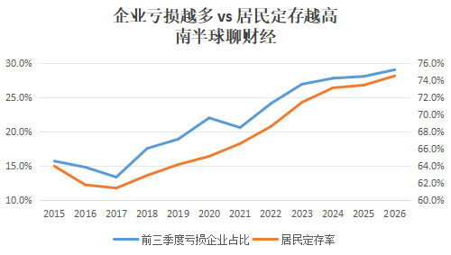
背景与关键数据
- Risk-off：市场术语，指投资者风险偏好下降，卖出股票等风险资产，转向现金、存款、国债等安全资产。
- 躯体化：心理学术语，指心理压力以身体症状的形式表现出来（比如焦虑引起胃痛、失眠）。Jason 借用这个词，意思是：经济中的焦虑情绪已经"表现在身体上"，体现在企业亏损和居民存款结构这些硬数据上。
- 亏损企业占比：国家统计局公布的规模以上工业企业中亏损企业数量占全部企业的比例，这里用前三季度数据。
- 居民定存率：居民定期存款 ÷ 居民总存款（定期 + 活期）。比例越高，说明居民越倾向于把钱锁起来、不打算花或投资。
图片解读
- 图 1《企业亏损越多 vs 居民定存越高》（2015–2026 年）：
- 蓝线（前三季度亏损企业占比，左轴）：2015 年约 15.8%，2017 年最低约 13.4%，2018 年起持续上升，2020 年约 22%，2021 年小降到约 20.6%，2022 年约 24.2%，2023 年约 27%，2026 年约 29%。差不多每三到四家规模以上工业企业里就有一家在亏钱。
- 橙线（居民定存率，右轴）：2015 年约 64%，2017 年最低约 61.5%，之后逐年上升，2023 年约 71.5%，2026 年约 74.7%，四分之三的居民存款是定期。
- 两条线从 2017 年起几乎同步上升。
为什么重要 / 对市场和经济的含义
- 企业亏损 → 居民谨慎：企业亏损意味着裁员、降薪、欠薪的可能性上升（帖 1 的拖欠链），居民对收入预期变差，就会增加储蓄、锁定期限。
- 和总利润数据不矛盾：昨天 9 月工业利润同比 +14.4%（10-28 日报帖 6），但利润集中在能源和"AI + 有色"两条链上，其他行业利润是负增长（10-28 日报帖 13）。总利润增长和亏损面扩大可以同时出现，因为赚钱的是少数大企业。
- "钱不动"的货币后果：定期存款多、活期存款少，M1（含活期）增速就弱，钱在经济里流转得慢，消费和投资都提不起来（帖 7 的消费倾向低位，帖 17 的定存续存率 90%）。
延伸知识
- M1 与 M2 剪刀差：M1 主要是现金加活期存款，代表"随时准备花的钱"；M2 再加上定期存款等，代表"所有的钱"。M1 增速远低于 M2 时，叫"剪刀差"扩大，意思是钱都躺在定期里不动。市场常把 M1 回升当作经济活跃起来的信号。
- 相关 ≠ 因果：两条线一起上升，不一定是一方导致另一方。可能有第三个因素同时推动两者，比如房地产下行：既让上下游企业亏损，又让居民财富缩水、更想存钱。读这类"双线同步图"时，要想想背后有没有共同原因。
帖 15 · 粤开：贸易顺差不是越大越好，根子在国内"供强需弱"、居民消费占比低（美西 10-29 13:32）
中国顺差大，很大程度上是因为国内消费太弱，产能只能往外卖；要解决问题得从提高居民收入和社保入手，而不只是在贸易上想办法。读全文收起
帖子原文
（要点转述）粤开：对中国来说，贸易顺差是不是越大越好？顺差能体现产业竞争力、支持经济增长，但并非越大越好。持续较大的顺差可能加剧国际贸易摩擦、增加对外部市场的依赖，还带来对外资产配置的收益和风险问题。国内供强需弱也在一定程度上推动了顺差扩大。所以有必要从贸易视角转向宏观经济视角，审视国内消费、投资和金融体系的结构性问题。居民消费占比偏低，与收入分配和社会保障等因素密切相关。#经济数据#
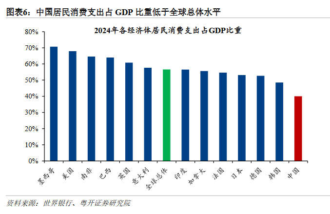
背景与关键数据
- 贸易顺差：出口 > 进口的差额。中国 2025 年货物贸易顺差首次超过 1 万亿美元，创历史纪录。
- 居民消费占 GDP 比重：中国约 40%，全球平均约 56%，美国约 68%。差了十几到二十多个百分点。
- 为什么消费占比低：
- 收入分配：劳动报酬占 GDP 比重偏低，钱更多留在企业和政府手里（帖 7 的"收入裂口"）。
- 社会保障：养老、医疗、教育的保障不够充分，居民要自己存钱防老防病（帖 16 医疗支出、帖 7 预防性储蓄）。
- 户籍制度：数以亿计的进城务工人员享受不到城市的公共服务，消费更保守。
图片解读
- 图 1《中国居民消费支出占 GDP 比重低于全球总体水平》（2024 年各经济体，世界银行数据）：
- 墨西哥约 70.5%，美国约 68%，南非约 64.5%，巴西约 64%，英国约 61%，意大利约 57.5%；
- 全球总体约 56.5%（绿柱）；
- 印度约 56.5%，加拿大约 55.5%，法国约 54.5%，日本约 53%，德国约 52.5%，韩国约 48.5%；
- 中国约 40%（红柱），比排倒数第二的韩国还低约 8 个百分点。
- 值得注意的是，德国、日本、韩国这些"出口强国"消费占比也都偏低，说明低消费和高顺差往往结伴出现。
为什么重要 / 对市场和经济的含义
- 贸易摩擦：顺差越大，贸易伙伴越觉得中国在"出口过剩产能"，加关税、设壁垒的可能性越大（美国、欧盟、墨西哥、泰国等）。
- 对外资产的风险：顺差赚来的外汇最终变成海外资产（美债、海外投资）。如果美元贬值或被制裁，这些资产会缩水。中国相当于用实物换来了"欠条"。
- 和今天其他帖子的联系：帖 4 巴克莱担心产业政策竞赛带来重复投资和全球溢出，帖 13 乳业、帖 9 汽车都是供给过剩的例子，帖 7、帖 14 是居民不敢花钱的证据。粤开这篇把它们串成了一条线：国内需求不足，是出口和顺差变大的重要原因。
延伸知识
- 储蓄 - 投资 = 经常账户顺差：这是宏观会计恒等式。一个国家生产的东西（GDP），要么自己消费，要么自己投资，剩下的只能卖给外国。消费越少，储蓄越多；国内投资用不完这些储蓄，就会变成对外顺差。类比：一个家庭收入很高但花得很少，又不想再买房，多出来的钱只能借给别人。所以顺差问题本质上是国内消费和储蓄的问题。
- "再平衡"之争：经济学家迈克尔·佩蒂斯（北京大学教授）长期主张：中国要把增长动力从投资和出口转向消费，就必须让居民拿到更大份额的收入，这意味着企业和政府的份额要相对下降，这是一个政治上很难的调整。这也是"提振消费"喊了很多年、进展较慢的深层原因。
帖 16 · Jason 自制图：医疗费用里政府占比回落、对财政的负担却在上升，药费占比持续下降（美西 10-29 16:56）
个人看病负担占收入的比例十几年基本没变；政府卫生支出相对税收越来越重；医院的钱越来越少来自卖药，次均住院费用已经从 2021 年的高点下降。读全文收起
帖子原文
（要点转述）Jason 自制四张图：政府卫生支出占当年税收收入的比重震荡上升，药费占卫生费用的比重下降。#自制图表#
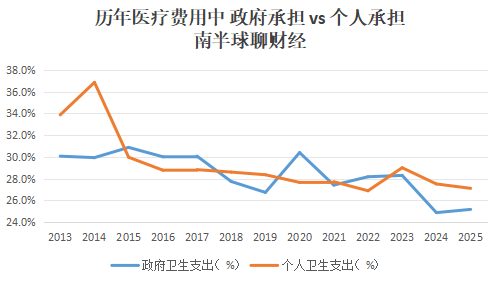
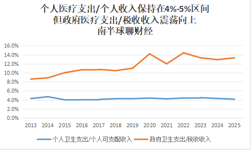
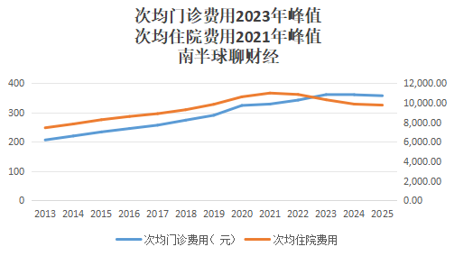
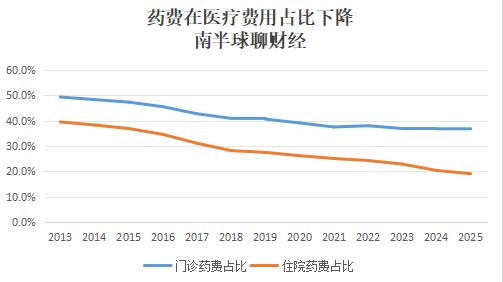
背景与关键数据
- 卫生总费用的三块：①政府卫生支出（财政直接拨款）；②社会卫生支出（主要是医保基金、商业保险、企业支出）；③个人卫生支出（老百姓自己掏的钱）。
- 药品零加成：2017 年起全国公立医院取消药品加成（以前医院卖药可以加价 15%），医院不能再靠卖药赚钱。
- 带量采购（集采）：2018 年"4+7"试点起，国家组织大批量采购药品，中选药品价格平均降五成以上，个别降九成。
- DRG/DIP 医保支付改革：医保不再按项目报销（做多少检查报多少），而是按病种打包付费。
图片解读
- 图 1《历年医疗费用中政府承担 vs 个人承担》（占卫生总费用比重，2013–2025 年）：
- 蓝线（政府卫生支出）：2013–2017 年约 30%，2019 年约 26.7%，2020 年疫情跳到约 30.4%，2021–2023 年约 27.5%–28.3%，2024 年降到约 24.9%，2025 年约 25.2%。
- 橙线（个人卫生支出）：2014 年有一个约 37% 的尖峰（前后年份都在 30% 上下，像是单年口径异常，看趋势时可以忽略），2015 年约 30%，之后缓慢下降到 2022 年约 26.9%，2023 年约 29%，2025 年约 27.1%。
- 剩下的约 45%–48% 是社会卫生支出（主要是医保）。
- 图 2《个人医疗支出/个人收入保持在 4%–5% 区间，但政府医疗支出/税收收入震荡向上》：
- 蓝线（个人卫生支出 ÷ 个人可支配收入）：2013–2025 年一直在约 4.1%–4.7% 之间，2025 年约 4.2%，非常稳定。
- 橙线（政府卫生支出 ÷ 税收收入）：2013 年约 8.6%，2016 年约 10.7%，2020 年约 14.2%，2022 年约 14.4%，2025 年约 13.3%。十二年里从不到 9% 升到 13% 以上。
- 和图 1 对比可以看出：政府卫生支出占总费用的比例在降，占税收的比例却在升。原因是税收增长慢于医疗费用增长（近两年税收甚至负增长），财政"相对负担"变重了。
- 图 3《次均门诊费用 2023 年峰值，次均住院费用 2021 年峰值》：
- 蓝线（次均门诊费用，左轴，元）：2013 年约 207 元，逐年上升，2023 年约 362 元见顶，2025 年约 358 元。
- 橙线（次均住院费用，右轴，元）：2013 年约 7,400 元，2021 年约 11,000 元见顶，之后连续下降，2025 年约 9,700 元。
- 图 4《药费在医疗费用中占比下降》：
- 蓝线（门诊药费占比）：2013 年约 49.5%，2021 年约 37.8%，2025 年约 37%。
- 橙线（住院药费占比）：2013 年约 40%，2018 年约 28.5%，2025 年约 19.3%，十二年减半。
为什么重要 / 对市场和经济的含义
- 财政压力的另一面：老龄化让医疗需求持续增加，政府卫生支出相对税收越来越重。在地方财政紧张（帖 1、帖 3、帖 4）的背景下，医疗投入会和基建、产业投资抢预算。
- 控费见效：住院费用 2021 年见顶回落、住院药费占比减半，是零加成、集采、DRG 三项改革叠加的结果。对患者是好事，对医院、药企是收入压力。
- 对医药股：集采压低仿制药价格，国内药企只能靠创新药和出海找增长。这也是近两年中国创新药对外授权（License-out）交易火热的背景之一。
- 个人负担没减轻多少：个人支出占收入一直在 4%–5%，"看病贵"的体感没有明显改善，这也是居民预防性储蓄高（帖 7、帖 15）的原因之一。
延伸知识
- DRG 是什么：可以理解为"套餐定价"。以前看病像"单点"，医院做多少检查、开多少药，医保就报多少，医院有动力多开；DRG 像"套餐"，同一种病（比如阑尾炎手术）医保只付一个固定价，医院省下来的归自己、超支的自己扛。这能控制费用，但也可能让医院推诿重病人、减少必要治疗，所以需要配套监管。
- 个人卫生支出占比的国际参照：世界卫生组织的研究认为，个人自付占卫生总费用的比例降到 15%–20% 以下，因病致贫的情况才会变得少见。"健康中国 2030"的目标是把个人卫生支出占比降到 25% 左右。图 1 显示目前约 27%，离国内目标不远，离国际参照还有距离，而且下降速度在放慢。
帖 17 · 和讯：定存到期九成仍留在银行，"存款搬家"先搬进固收理财，股票基金反而缩水 1.26 万亿（美西 10-29 17:02）
"存款搬家进股市"的故事没有发生：九成到期定存续存在银行，搬出来的钱也主要去了固收理财、债基和货基，股票基金反而缩水两成。读全文收起
帖子原文
（要点转述）和讯：多家大型银行在半年报业绩会上披露，个人定期存款到期后的资金承接率仍在 90% 左右甚至更高。对大多数原来存定期的居民来说，利率下降削弱了存款吸引力，但没有从根本上改变他们的低风险偏好。从 1% 左右的存款直接跳到股票，风险跨度太大；银行理财通过熟悉的银行渠道销售、波动有限、收益通常高于定存，是离存款最近的替代品。但"钱进理财"不等于"风险偏好明显上升"：截至三季度末，固定收益类理财约 34.17 万亿元，占全部理财规模 96% 以上，底层资产以债券、同业存单、现金和存款为主。也就是说，居民把钱从存款搬进理财，资产形态只是从"确定利率"变成"低波动净值"，存款搬家最直接的受益者首先是固收资产，而不是股票。理财之外，公募基金是另一条承接路径，其中债基和货基合计增量 2.47 万亿元，已经超过行业整体增量，说明其他品类合计是净流出的，权益端明显承压。股票基金规模从 2025 年末的 6.05 万亿元降到 9 月末的 4.79 万亿元，缩水约 1.26 万亿元。#金融#
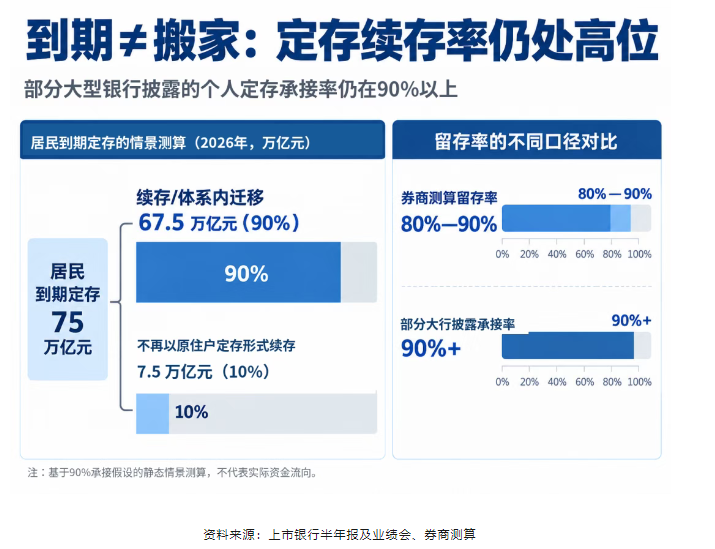
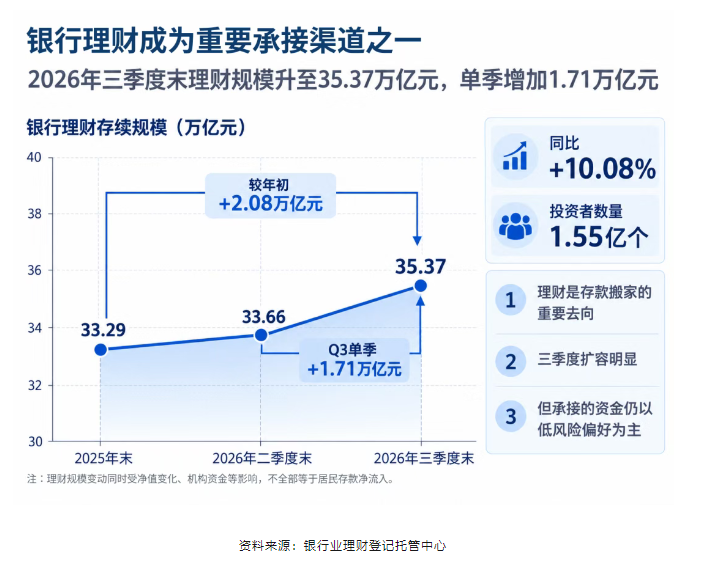
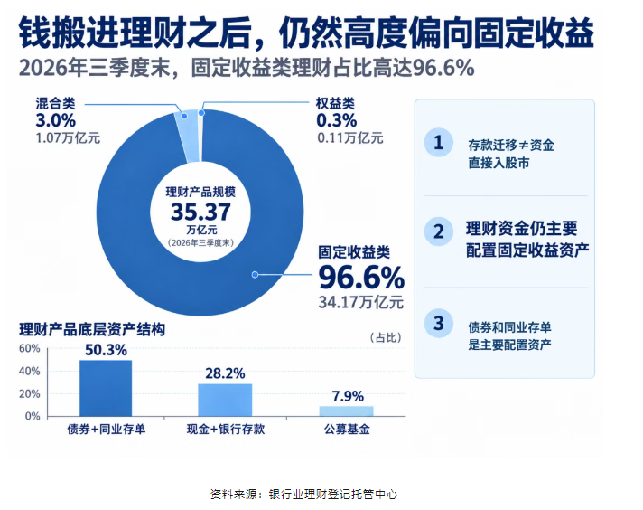
背景与关键数据
- 定存承接率：定期存款到期后，留在本行（续存或转成本行其他产品）的比例。90% 意味着只有一成的钱离开了银行体系内的"低风险区"。
- 银行理财：2018 年资管新规之后，银行理财不再承诺保本保收益（打破"刚性兑付"），改为"净值化"，即收益随底层资产价格波动。但绝大多数理财投的仍是债券和存款，波动很小。
- 同业存单：银行之间发行的短期债务凭证，风险低，是理财和货基的主要投资品种之一。
- 股票基金 -1.26 万亿：从 6.05 万亿元降到 4.79 万亿元，约 -21%。规模缩水 = 净赎回 + 净值下跌，两者都有。
图片解读
- 图 1《到期≠搬家：定存续存率仍处高位》：
- 左：2026 年居民到期定存情景测算约 75 万亿元，其中约 90%（67.5 万亿元）续存或在银行体系内迁移，约 10%（7.5 万亿元）不再以原定存形式续存。
- 右：券商测算留存率 80%–90%，部分大行披露承接率 90% 以上。
- 注：基于 90% 承接假设的静态测算，不代表实际资金流向。
- 图 2《银行理财成为重要承接渠道之一》（银行理财存续规模，万亿元）：2025 年末 33.29 → 2026 年二季度末 33.66 → 三季度末 35.37。较年初 +2.08 万亿元，三季度单季 +1.71 万亿元（扩容主要集中在三季度）；同比 +10.08%，投资者数量 1.55 亿。注：规模变动也受净值变化和机构资金影响，不全等于居民存款流入。
- 图 3《钱搬进理财之后，仍然高度偏向固定收益》：
- 理财产品规模 35.37 万亿元中：固定收益类 96.6%（34.17 万亿元），混合类 3.0%（1.07 万亿元），权益类只有 0.3%（0.11 万亿元）。
- 底层资产：债券 + 同业存单 50.3%，现金 + 银行存款 28.2%，公募基金 7.9%。
- 三点结论：存款迁移 ≠ 资金直接入股市；理财资金主要配置固收资产；债券和同业存单是主要配置资产。
为什么重要 / 对市场和经济的含义
- 对债市：几十万亿低风险资金在找固收资产，是中国国债收益率长期压在低位的重要原因。只要居民风险偏好不变，债券就不缺买家。
- 对股市：政策希望居民储蓄通过资本市场流向实体经济和战略产业（帖 4 巴克莱），但现实是股票基金在缩水。没有居民增量资金，A 股主要靠国家队、险资和外资等机构资金。
- 和帖 7、帖 14 呼应：居民定存占比上升、风险偏好回落、贷款在缩，这三帖说的是同一件事：中国居民整体处在"防守模式"。
- 对银行：存款留下来，银行负债稳定；但存款利率已降到约 1%，再降空间有限，理财和存款之间的"利差吸引力"决定了资金还会不会继续搬。
延伸知识
- 风险阶梯：从低到高大致是：活期存款 → 定期存款 / 大额存单 → 货币基金 → 固收理财 → 纯债基金 → 固收+ / 混合基金 → 股票基金 → 个股。居民的钱通常一级一级往上爬，很少从最低一级直接跳到最高一级。今年的"存款搬家"只爬了一两级。
- 打破刚兑为什么重要：以前银行理财"保本保息"，实际上是银行用自己的信用兜底，风险都积在银行体内。资管新规要求"卖者尽责、买者自负"，理财变成净值型产品，风险回到投资者身上。2022 年底债市回调时出现过理财"破净"引发的赎回潮，说明居民对波动非常敏感，这也解释了理财为什么要把权益类控制在 0.3% 这么低。
帖 18 · CME FedWatch：市场认为美联储 12 月加息概率约 75%（美西 10-29 20:09）
美联储 10 月按兵不动后，期货市场仍有约四分之三的把握认为 12 月会加息 25 个基点，到 2027 年底可能累计加三次。读全文收起
帖子原文
（要点转述）CME：美联储 12 月加息的概率接近 75%。#金融#
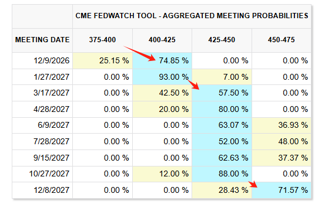
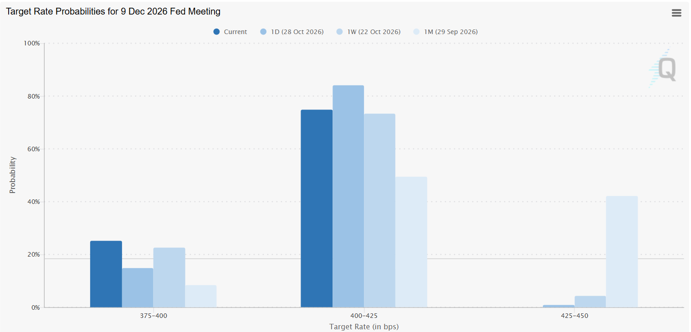
背景与关键数据
- 当前利率：美联储 10 月 28 日议息会议以 10 比 2 维持联邦基金利率目标区间 3.75%–4.00% 不变，两名委员主张加息（10-28 日报帖 28）。
- FedWatch：芝商所（CME）根据联邦基金期货价格推算的"市场隐含加息/降息概率"工具，是观察市场对美联储预期最常用的指标。
- 为什么要加息：今年中东冲突推高油价，通胀回升；美国三季度实际增长 3.4%、名义增长约 6%（帖 12），经济没有放缓迹象。
- bp（基点）：0.01 个百分点。"375-400"指 3.75%–4.00% 的目标区间。
图片解读
-
图 1（CME FedWatch《各次会议目标利率区间概率汇总》）：红箭头标出了三个关键点：
会议日期 3.75–4.00% 4.00–4.25% 4.25–4.50% 4.50–4.75% 2026-12-09 25.15% 74.85% 0% 0% 2027-01-27 0% 93.00% 7.00% 0% 2027-03-17 0% 42.50% 57.50% 0% 2027-04-28 0% 20.00% 80.00% 0% 2027-06-09 0% 0% 63.07% 36.93% 2027-07-28 0% 0% 52.00% 48.00% 2027-09-15 0% 0% 62.63% 37.37% 2027-10-27 0% 12.00% 88.00% 0% 2027-12-08 0% 0% 28.43% 71.57% 读法：12 月加息一次（到 4.00%–4.25%）的概率约 75%；到 2027 年 3 月，加两次（到 4.25%–4.50%）的概率过半；到 2027 年 12 月，加三次（到 4.50%–4.75%）的概率约 72%。注意 2027 年 10 月那一行的概率反而比 9 月"更鸽"，这在逻辑上说不通，是远期合约交易稀少、定价不连续造成的，远端数字只能看大方向。
-
图 2（12 月 9 日会议目标利率概率，四个时间点对比）：
- 当前：维持 3.75–4.00% 约 25%，加息到 4.00–4.25% 约 75%，加两次约 0%。
- 1 天前（10 月 28 日）：维持约 15%，加一次约 84%，加两次约 1%。
- 1 周前（10 月 22 日）：维持约 22.5%，加一次约 73%，加两次约 4.5%。
- 1 个月前（9 月 29 日）：维持约 8%，加一次约 49%，加两次约 42%。
- 一个月前，市场还认为年底前很可能加两次；现在基本只押一次。和昨天相比，加息概率从约 84% 降到约 75%，可能和议息会议整体偏"鸽"的解读、以及近期风险资产回调有关（昨天会后两年期美债收益率下跌了 4 个基点）。
为什么重要 / 对市场和经济的含义
- 全球处在加息周期的尾段：大多数人印象里 2024–2025 年是降息周期，但今年油价冲击让通胀回升，美联储又转向加息。这是理解今年所有资产价格的大背景。
- 对资产价格：加息推高实际利率，压制黄金短期表现（帖 11）、压制科技股估值、推高债券收益率（帖 10 的融资成本）。
- 对中国：美国加息、美元走强（帖 11 美元指数升到约 102），人民币承压，中国央行降息空间受限；而中国国内需求偏弱（帖 7、帖 14、帖 17），本来需要宽松。中美货币政策方向背离，是人民币汇率的主要压力来源。
- 预期在降温：一个月内"加两次"的概率从约 42% 降到约 0%，说明市场觉得美联储没有那么鹰。如果油价回落或 AI 投资降温，加息预期还可能继续下调。
延伸知识
- FedWatch 怎么算概率：联邦基金期货的价格 = 100 - 市场预期的平均利率。举个简化例子：当前利率中值 3.875%，如果 12 月会议之后那段时间的期货隐含利率是 4.0625%，比当前高 0.1875 个百分点，而一次加息是 0.25 个百分点，那么加息概率 ≈ 0.1875 ÷ 0.25 = 75%。实际计算还要考虑会议日期在月中的位置。
- 市场隐含概率 ≠ 预测：期货价格里还包含风险溢价（投资者为对冲风险愿意多付的钱），而且远期合约交易少、价格跳动大。历史上市场提前一两个月的定价经常大幅修正，就像这张图里一个月前"加两次 42%"现在变成了 0%。所以它更适合看"预期往哪个方向变"，而不是当成准确的预测。
今日全图索引
| 帖号 | 时间（美西） | 主题 | 标签 | 图片文件名 |
|---|---|---|---|---|
| 帖 1 | 10-28 22:53 | 城投债项目终止：一年内到期 170 亿、现金只够三成 | #TAX# | post1_img1.png、post1_img2.png、post1_img3.png |
| 帖 2 | 10-29 11:39 | 标普：中国新房价格还要跌约两年，2028 年企稳 | #房价# | post2_img1.png、post2_img2.png |
| 帖 3 | 10-29 11:48 | 标普：仅约三成城投能用经营利润付息 | #TAX# | post3_img1.png |
| 帖 4 | 10-29 11:57 | 巴克莱：换届投资从基建竞赛转向产业政策竞赛 | #政策分析# | post4_img1.png |
| 帖 5 | 10-29 12:01 | 中指院：9 月写字楼售价同比 -8.3%、租金 -2.7% | #经济数据# | post5_img1.png |
| 帖 6 | 10-29 12:04 | 摩根大通 × 中原地产：深圳二手房年底有望见底 | #房价# | post6_img1.png |
| 帖 7 | 10-29 12:07 | 华创：居民缩表、收入裂口、存款定期化 | #经济数据# | post7_img1.png |
| 帖 8 | 10-29 12:23 | Korybko：欧洲战后安全的多边交易设想 | （无标签） | post8_img1.png、post8_img2.png |
| 帖 9 | 10-29 12:27 | 彭博：大众在华合资亏损，日系在华销量大跌 | #其他国家经济# | post9_img1.png、post9_img2.png |
| 帖 10 | 10-29 12:30 | 彭博：全球发债破纪录，AI 贡献约三分之一增量 | #金融# | post10_img1.png |
| 帖 11 | 10-29 12:38 | 国金：黄金下跌源于流动性抛售 | #金融# | post11_img1.png、post11_img2.png、post11_img3.png |
| 帖 12 | 10-29 12:44 | BEA：美国三季度实际 GDP 3.4%，中美名义增速对比 | #其他国家经济# | post12_img1.png、post12_img2.png |
| 帖 13 | 10-29 12:49 | 日经：中国乳业供过于求，明治退出 | #经济数据# | post13_img1.png |
| 帖 14 | 10-29 13:05 | 自制图：亏损企业占比 vs 居民定存率 | #自制图表# | post14_img1.png |
| 帖 15 | 10-29 13:32 | 粤开：顺差不是越大越好，居民消费占比约 40% | #经济数据# | post15_img1.png |
| 帖 16 | 10-29 16:56 | 自制图：医疗费用结构、财政负担与药费占比 | #自制图表# | post16_img1.png、post16_img2.png、post16_img3.png、post16_img4.png |
| 帖 17 | 10-29 17:02 | 和讯：定存续存约九成，理财 96.6% 是固收 | #金融# | post17_img1.png、post17_img2.png、post17_img3.png |
| 帖 18 | 10-29 20:09 | CME FedWatch：12 月加息概率约 75% | #金融# | post18_img1.png、post18_img2.png |